Survey Analysis - groups
Comparison Between Groups
To compare agreement over time across groups, the responses were dichotomized into agreement (“rather agree”, “strongly agree”) and disagreement (“rather disagree”, “strongly disagree”). This way the percentage of respondents agreeing with a certain statement can be compared across groups and over time. Frequency responses were recoded into “often” (“very often”, “frequently”) and “not often” (“sometimes”, “rarely”, “never”). Missing responses and “don’t know” answers were removed before the percentages were calculated. As in the previous section, percentages refer to all respondents that chose one of the response categories presented (and not “don’t know”).
Academic Roles
To compare respondents with different academic roles, students are first summarized for purposes of visualization (see below for differentiated visualizations for this group). The “other” category was additionally excluded, since it is quite small and difficult to characterize. Some groups differ quite substantially in their size (e.g., lot of faculty, only few librarians). This has to be taken into account for interpretation.
roles <- df %>%
filter(X8 != "other") %>%
mutate(roles = case_when(
str_detect(X8, "student") ~ "student",
TRUE ~ X8),
roles = factor(roles, levels = c("student", "faculty", "research staff",
"university administrator", "librarian")))Open Science
out <- plot_time_groups(roles, var_overview, os, group_var = roles)
out$p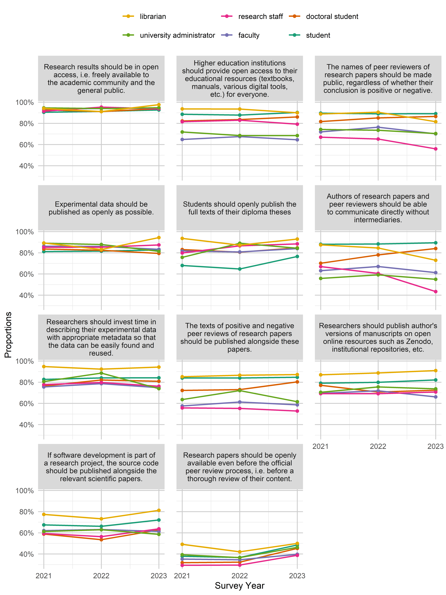
knitr::kable(out$data)| variable | value | roles | year | n | proportion |
|---|---|---|---|---|---|
| Authors of research papers and peer reviewers should be able to communicate directly without intermediaries. | agree | student | 2021 | 3256 | 85.89% |
| Authors of research papers and peer reviewers should be able to communicate directly without intermediaries. | agree | student | 2022 | 4200 | 87.65% |
| Authors of research papers and peer reviewers should be able to communicate directly without intermediaries. | agree | student | 2023 | 2277 | 88.74% |
| Authors of research papers and peer reviewers should be able to communicate directly without intermediaries. | agree | faculty | 2021 | 1947 | 63.11% |
| Authors of research papers and peer reviewers should be able to communicate directly without intermediaries. | agree | faculty | 2022 | 1576 | 67.04% |
| Authors of research papers and peer reviewers should be able to communicate directly without intermediaries. | agree | faculty | 2023 | 1232 | 61.26% |
| Authors of research papers and peer reviewers should be able to communicate directly without intermediaries. | agree | research staff | 2021 | 71 | 66.98% |
| Authors of research papers and peer reviewers should be able to communicate directly without intermediaries. | agree | research staff | 2022 | 121 | 60.50% |
| Authors of research papers and peer reviewers should be able to communicate directly without intermediaries. | agree | research staff | 2023 | 46 | 43.40% |
| Authors of research papers and peer reviewers should be able to communicate directly without intermediaries. | agree | university administrator | 2021 | 96 | 55.81% |
| Authors of research papers and peer reviewers should be able to communicate directly without intermediaries. | agree | university administrator | 2022 | 84 | 59.15% |
| Authors of research papers and peer reviewers should be able to communicate directly without intermediaries. | agree | university administrator | 2023 | 78 | 54.93% |
| Authors of research papers and peer reviewers should be able to communicate directly without intermediaries. | agree | librarian | 2021 | 161 | 87.50% |
| Authors of research papers and peer reviewers should be able to communicate directly without intermediaries. | agree | librarian | 2022 | 60 | 84.51% |
| Authors of research papers and peer reviewers should be able to communicate directly without intermediaries. | agree | librarian | 2023 | 54 | 72.97% |
| Experimental data should be published as openly as possible. | agree | student | 2021 | 3259 | 81.45% |
| Experimental data should be published as openly as possible. | agree | student | 2022 | 4190 | 81.61% |
| Experimental data should be published as openly as possible. | agree | student | 2023 | 2149 | 82.27% |
| Experimental data should be published as openly as possible. | agree | faculty | 2021 | 2628 | 86.19% |
| Experimental data should be published as openly as possible. | agree | faculty | 2022 | 1993 | 86.02% |
| Experimental data should be published as openly as possible. | agree | faculty | 2023 | 1670 | 83.29% |
| Experimental data should be published as openly as possible. | agree | research staff | 2021 | 92 | 85.19% |
| Experimental data should be published as openly as possible. | agree | research staff | 2022 | 174 | 85.29% |
| Experimental data should be published as openly as possible. | agree | research staff | 2023 | 97 | 87.39% |
| Experimental data should be published as openly as possible. | agree | university administrator | 2021 | 154 | 89.02% |
| Experimental data should be published as openly as possible. | agree | university administrator | 2022 | 123 | 87.86% |
| Experimental data should be published as openly as possible. | agree | university administrator | 2023 | 118 | 81.38% |
| Experimental data should be published as openly as possible. | agree | librarian | 2021 | 158 | 89.27% |
| Experimental data should be published as openly as possible. | agree | librarian | 2022 | 59 | 83.10% |
| Experimental data should be published as openly as possible. | agree | librarian | 2023 | 67 | 94.37% |
| I can explain what “open science” is. | agree | student | 2021 | 3411 | 86.20% |
| I can explain what “open science” is. | agree | student | 2022 | 4034 | 81.91% |
| I can explain what “open science” is. | agree | student | 2023 | 2112 | 83.61% |
| I can explain what “open science” is. | agree | faculty | 2021 | 2799 | 93.58% |
| I can explain what “open science” is. | agree | faculty | 2022 | 2153 | 94.89% |
| I can explain what “open science” is. | agree | faculty | 2023 | 1815 | 91.44% |
| I can explain what “open science” is. | agree | research staff | 2021 | 103 | 94.50% |
| I can explain what “open science” is. | agree | research staff | 2022 | 184 | 93.88% |
| I can explain what “open science” is. | agree | research staff | 2023 | 101 | 94.39% |
| I can explain what “open science” is. | agree | university administrator | 2021 | 170 | 94.97% |
| I can explain what “open science” is. | agree | university administrator | 2022 | 133 | 92.36% |
| I can explain what “open science” is. | agree | university administrator | 2023 | 131 | 90.97% |
| I can explain what “open science” is. | agree | librarian | 2021 | 177 | 95.68% |
| I can explain what “open science” is. | agree | librarian | 2022 | 72 | 97.30% |
| I can explain what “open science” is. | agree | librarian | 2023 | 74 | 97.37% |
| If software development is part of a research project, the source code should be published alongside the relevant scientific papers. | agree | student | 2021 | 2284 | 66.49% |
| If software development is part of a research project, the source code should be published alongside the relevant scientific papers. | agree | student | 2022 | 2872 | 65.41% |
| If software development is part of a research project, the source code should be published alongside the relevant scientific papers. | agree | student | 2023 | 1701 | 70.88% |
| If software development is part of a research project, the source code should be published alongside the relevant scientific papers. | agree | faculty | 2021 | 1547 | 62.10% |
| If software development is part of a research project, the source code should be published alongside the relevant scientific papers. | agree | faculty | 2022 | 1195 | 63.16% |
| If software development is part of a research project, the source code should be published alongside the relevant scientific papers. | agree | faculty | 2023 | 1039 | 61.30% |
| If software development is part of a research project, the source code should be published alongside the relevant scientific papers. | agree | research staff | 2021 | 51 | 59.30% |
| If software development is part of a research project, the source code should be published alongside the relevant scientific papers. | agree | research staff | 2022 | 93 | 56.36% |
| If software development is part of a research project, the source code should be published alongside the relevant scientific papers. | agree | research staff | 2023 | 58 | 63.74% |
| If software development is part of a research project, the source code should be published alongside the relevant scientific papers. | agree | university administrator | 2021 | 90 | 61.22% |
| If software development is part of a research project, the source code should be published alongside the relevant scientific papers. | agree | university administrator | 2022 | 73 | 62.93% |
| If software development is part of a research project, the source code should be published alongside the relevant scientific papers. | agree | university administrator | 2023 | 72 | 58.54% |
| If software development is part of a research project, the source code should be published alongside the relevant scientific papers. | agree | librarian | 2021 | 96 | 77.42% |
| If software development is part of a research project, the source code should be published alongside the relevant scientific papers. | agree | librarian | 2022 | 41 | 73.21% |
| If software development is part of a research project, the source code should be published alongside the relevant scientific papers. | agree | librarian | 2023 | 52 | 81.25% |
| Research papers should be openly available even before the official peer review process, i.e. before a thorough review of their content. | agree | student | 2021 | 1580 | 37.16% |
| Research papers should be openly available even before the official peer review process, i.e. before a thorough review of their content. | agree | student | 2022 | 1964 | 36.43% |
| Research papers should be openly available even before the official peer review process, i.e. before a thorough review of their content. | agree | student | 2023 | 1293 | 48.12% |
| Research papers should be openly available even before the official peer review process, i.e. before a thorough review of their content. | agree | faculty | 2021 | 1088 | 35.18% |
| Research papers should be openly available even before the official peer review process, i.e. before a thorough review of their content. | agree | faculty | 2022 | 817 | 34.53% |
| Research papers should be openly available even before the official peer review process, i.e. before a thorough review of their content. | agree | faculty | 2023 | 804 | 39.76% |
| Research papers should be openly available even before the official peer review process, i.e. before a thorough review of their content. | agree | research staff | 2021 | 32 | 29.36% |
| Research papers should be openly available even before the official peer review process, i.e. before a thorough review of their content. | agree | research staff | 2022 | 60 | 29.56% |
| Research papers should be openly available even before the official peer review process, i.e. before a thorough review of their content. | agree | research staff | 2023 | 43 | 38.74% |
| Research papers should be openly available even before the official peer review process, i.e. before a thorough review of their content. | agree | university administrator | 2021 | 70 | 39.33% |
| Research papers should be openly available even before the official peer review process, i.e. before a thorough review of their content. | agree | university administrator | 2022 | 53 | 36.55% |
| Research papers should be openly available even before the official peer review process, i.e. before a thorough review of their content. | agree | university administrator | 2023 | 70 | 46.36% |
| Research papers should be openly available even before the official peer review process, i.e. before a thorough review of their content. | agree | librarian | 2021 | 90 | 49.18% |
| Research papers should be openly available even before the official peer review process, i.e. before a thorough review of their content. | agree | librarian | 2022 | 29 | 42.03% |
| Research papers should be openly available even before the official peer review process, i.e. before a thorough review of their content. | agree | librarian | 2023 | 38 | 50.00% |
| Research results should be in open access, i.e. freely available to the academic community and the general public. | agree | student | 2021 | 4252 | 90.76% |
| Research results should be in open access, i.e. freely available to the academic community and the general public. | agree | student | 2022 | 5404 | 91.33% |
| Research results should be in open access, i.e. freely available to the academic community and the general public. | agree | student | 2023 | 2664 | 92.82% |
| Research results should be in open access, i.e. freely available to the academic community and the general public. | agree | faculty | 2021 | 3038 | 93.71% |
| Research results should be in open access, i.e. freely available to the academic community and the general public. | agree | faculty | 2022 | 2341 | 93.98% |
| Research results should be in open access, i.e. freely available to the academic community and the general public. | agree | faculty | 2023 | 1990 | 94.40% |
| Research results should be in open access, i.e. freely available to the academic community and the general public. | agree | research staff | 2021 | 107 | 91.45% |
| Research results should be in open access, i.e. freely available to the academic community and the general public. | agree | research staff | 2022 | 204 | 95.33% |
| Research results should be in open access, i.e. freely available to the academic community and the general public. | agree | research staff | 2023 | 105 | 93.75% |
| Research results should be in open access, i.e. freely available to the academic community and the general public. | agree | university administrator | 2021 | 177 | 94.65% |
| Research results should be in open access, i.e. freely available to the academic community and the general public. | agree | university administrator | 2022 | 141 | 94.00% |
| Research results should be in open access, i.e. freely available to the academic community and the general public. | agree | university administrator | 2023 | 146 | 94.81% |
| Research results should be in open access, i.e. freely available to the academic community and the general public. | agree | librarian | 2021 | 192 | 94.12% |
| Research results should be in open access, i.e. freely available to the academic community and the general public. | agree | librarian | 2022 | 72 | 91.14% |
| Research results should be in open access, i.e. freely available to the academic community and the general public. | agree | librarian | 2023 | 83 | 97.65% |
| Researchers should invest time in describing their experimental data with appropriate metadata so that the data can be easily found and reused. | agree | student | 2021 | 3040 | 81.90% |
| Researchers should invest time in describing their experimental data with appropriate metadata so that the data can be easily found and reused. | agree | student | 2022 | 3899 | 83.92% |
| Researchers should invest time in describing their experimental data with appropriate metadata so that the data can be easily found and reused. | agree | student | 2023 | 2113 | 83.78% |
| Researchers should invest time in describing their experimental data with appropriate metadata so that the data can be easily found and reused. | agree | faculty | 2021 | 2056 | 75.56% |
| Researchers should invest time in describing their experimental data with appropriate metadata so that the data can be easily found and reused. | agree | faculty | 2022 | 1662 | 78.62% |
| Researchers should invest time in describing their experimental data with appropriate metadata so that the data can be easily found and reused. | agree | faculty | 2023 | 1409 | 74.83% |
| Researchers should invest time in describing their experimental data with appropriate metadata so that the data can be easily found and reused. | agree | research staff | 2021 | 77 | 77.78% |
| Researchers should invest time in describing their experimental data with appropriate metadata so that the data can be easily found and reused. | agree | research staff | 2022 | 145 | 79.67% |
| Researchers should invest time in describing their experimental data with appropriate metadata so that the data can be easily found and reused. | agree | research staff | 2023 | 80 | 76.19% |
| Researchers should invest time in describing their experimental data with appropriate metadata so that the data can be easily found and reused. | agree | university administrator | 2021 | 129 | 80.62% |
| Researchers should invest time in describing their experimental data with appropriate metadata so that the data can be easily found and reused. | agree | university administrator | 2022 | 117 | 88.64% |
| Researchers should invest time in describing their experimental data with appropriate metadata so that the data can be easily found and reused. | agree | university administrator | 2023 | 105 | 73.94% |
| Researchers should invest time in describing their experimental data with appropriate metadata so that the data can be easily found and reused. | agree | librarian | 2021 | 146 | 94.81% |
| Researchers should invest time in describing their experimental data with appropriate metadata so that the data can be easily found and reused. | agree | librarian | 2022 | 60 | 92.31% |
| Researchers should invest time in describing their experimental data with appropriate metadata so that the data can be easily found and reused. | agree | librarian | 2023 | 66 | 94.29% |
| Researchers should publish author’s versions of manuscripts on open online resources such as Zenodo, institutional repositories, etc. | agree | student | 2021 | 2717 | 78.82% |
| Researchers should publish author’s versions of manuscripts on open online resources such as Zenodo, institutional repositories, etc. | agree | student | 2022 | 3371 | 79.35% |
| Researchers should publish author’s versions of manuscripts on open online resources such as Zenodo, institutional repositories, etc. | agree | student | 2023 | 1970 | 80.94% |
| Researchers should publish author’s versions of manuscripts on open online resources such as Zenodo, institutional repositories, etc. | agree | faculty | 2021 | 1977 | 69.49% |
| Researchers should publish author’s versions of manuscripts on open online resources such as Zenodo, institutional repositories, etc. | agree | faculty | 2022 | 1568 | 71.89% |
| Researchers should publish author’s versions of manuscripts on open online resources such as Zenodo, institutional repositories, etc. | agree | faculty | 2023 | 1239 | 66.12% |
| Researchers should publish author’s versions of manuscripts on open online resources such as Zenodo, institutional repositories, etc. | agree | research staff | 2021 | 72 | 69.23% |
| Researchers should publish author’s versions of manuscripts on open online resources such as Zenodo, institutional repositories, etc. | agree | research staff | 2022 | 128 | 69.19% |
| Researchers should publish author’s versions of manuscripts on open online resources such as Zenodo, institutional repositories, etc. | agree | research staff | 2023 | 75 | 70.75% |
| Researchers should publish author’s versions of manuscripts on open online resources such as Zenodo, institutional repositories, etc. | agree | university administrator | 2021 | 117 | 70.48% |
| Researchers should publish author’s versions of manuscripts on open online resources such as Zenodo, institutional repositories, etc. | agree | university administrator | 2022 | 102 | 75.56% |
| Researchers should publish author’s versions of manuscripts on open online resources such as Zenodo, institutional repositories, etc. | agree | university administrator | 2023 | 104 | 73.76% |
| Researchers should publish author’s versions of manuscripts on open online resources such as Zenodo, institutional repositories, etc. | agree | librarian | 2021 | 147 | 86.98% |
| Researchers should publish author’s versions of manuscripts on open online resources such as Zenodo, institutional repositories, etc. | agree | librarian | 2022 | 63 | 88.73% |
| Researchers should publish author’s versions of manuscripts on open online resources such as Zenodo, institutional repositories, etc. | agree | librarian | 2023 | 71 | 91.03% |
| The names of peer reviewers of research papers should be made public, regardless of whether their conclusion is positive or negative. | agree | student | 2021 | 3702 | 88.78% |
| The names of peer reviewers of research papers should be made public, regardless of whether their conclusion is positive or negative. | agree | student | 2022 | 4661 | 88.81% |
| The names of peer reviewers of research papers should be made public, regardless of whether their conclusion is positive or negative. | agree | student | 2023 | 2358 | 88.85% |
| The names of peer reviewers of research papers should be made public, regardless of whether their conclusion is positive or negative. | agree | faculty | 2021 | 2234 | 71.95% |
| The names of peer reviewers of research papers should be made public, regardless of whether their conclusion is positive or negative. | agree | faculty | 2022 | 1817 | 76.41% |
| The names of peer reviewers of research papers should be made public, regardless of whether their conclusion is positive or negative. | agree | faculty | 2023 | 1427 | 70.16% |
| The names of peer reviewers of research papers should be made public, regardless of whether their conclusion is positive or negative. | agree | research staff | 2021 | 75 | 66.96% |
| The names of peer reviewers of research papers should be made public, regardless of whether their conclusion is positive or negative. | agree | research staff | 2022 | 135 | 65.22% |
| The names of peer reviewers of research papers should be made public, regardless of whether their conclusion is positive or negative. | agree | research staff | 2023 | 61 | 55.96% |
| The names of peer reviewers of research papers should be made public, regardless of whether their conclusion is positive or negative. | agree | university administrator | 2021 | 130 | 74.29% |
| The names of peer reviewers of research papers should be made public, regardless of whether their conclusion is positive or negative. | agree | university administrator | 2022 | 97 | 73.48% |
| The names of peer reviewers of research papers should be made public, regardless of whether their conclusion is positive or negative. | agree | university administrator | 2023 | 107 | 70.39% |
| The names of peer reviewers of research papers should be made public, regardless of whether their conclusion is positive or negative. | agree | librarian | 2021 | 176 | 88.89% |
| The names of peer reviewers of research papers should be made public, regardless of whether their conclusion is positive or negative. | agree | librarian | 2022 | 67 | 90.54% |
| The names of peer reviewers of research papers should be made public, regardless of whether their conclusion is positive or negative. | agree | librarian | 2023 | 62 | 81.58% |
| The texts of positive and negative peer reviews of research papers should be published alongside these papers. | agree | student | 2021 | 3259 | 82.61% |
| The texts of positive and negative peer reviews of research papers should be published alongside these papers. | agree | student | 2022 | 4112 | 83.36% |
| The texts of positive and negative peer reviews of research papers should be published alongside these papers. | agree | student | 2023 | 2196 | 84.11% |
| The texts of positive and negative peer reviews of research papers should be published alongside these papers. | agree | faculty | 2021 | 1753 | 57.57% |
| The texts of positive and negative peer reviews of research papers should be published alongside these papers. | agree | faculty | 2022 | 1412 | 61.31% |
| The texts of positive and negative peer reviews of research papers should be published alongside these papers. | agree | faculty | 2023 | 1166 | 58.59% |
| The texts of positive and negative peer reviews of research papers should be published alongside these papers. | agree | research staff | 2021 | 58 | 55.77% |
| The texts of positive and negative peer reviews of research papers should be published alongside these papers. | agree | research staff | 2022 | 110 | 55.28% |
| The texts of positive and negative peer reviews of research papers should be published alongside these papers. | agree | research staff | 2023 | 57 | 52.78% |
| The texts of positive and negative peer reviews of research papers should be published alongside these papers. | agree | university administrator | 2021 | 110 | 63.58% |
| The texts of positive and negative peer reviews of research papers should be published alongside these papers. | agree | university administrator | 2022 | 101 | 72.14% |
| The texts of positive and negative peer reviews of research papers should be published alongside these papers. | agree | university administrator | 2023 | 88 | 61.54% |
| The texts of positive and negative peer reviews of research papers should be published alongside these papers. | agree | librarian | 2021 | 155 | 85.16% |
| The texts of positive and negative peer reviews of research papers should be published alongside these papers. | agree | librarian | 2022 | 58 | 86.57% |
| The texts of positive and negative peer reviews of research papers should be published alongside these papers. | agree | librarian | 2023 | 68 | 87.18% |
Reporting and Academic Integrity
out <- plot_time_groups(roles, var_overview, raia, group_var = roles)
out$p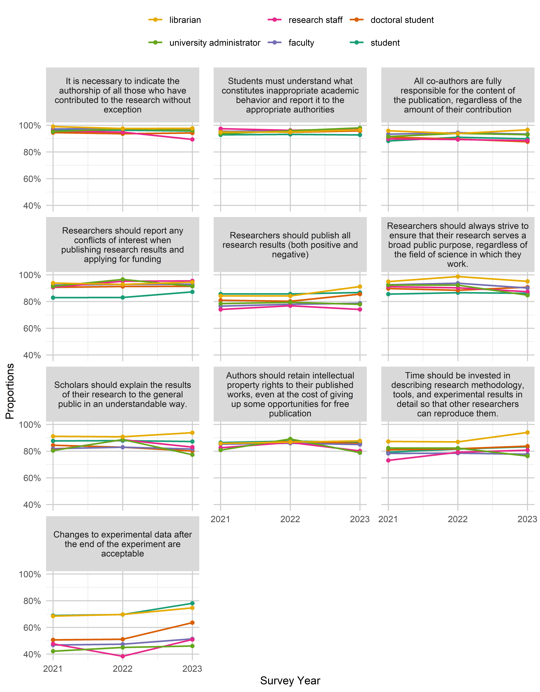
knitr::kable(out$data)| variable | value | roles | year | n | proportion |
|---|---|---|---|---|---|
| All co-authors are fully responsible for the content of the publication, regardless of the amount of their contribution | agree | student | 2021 | 4324 | 88.55% |
| All co-authors are fully responsible for the content of the publication, regardless of the amount of their contribution | agree | student | 2022 | 5573 | 90.96% |
| All co-authors are fully responsible for the content of the publication, regardless of the amount of their contribution | agree | student | 2023 | 2704 | 89.63% |
| All co-authors are fully responsible for the content of the publication, regardless of the amount of their contribution | agree | faculty | 2021 | 3067 | 93.31% |
| All co-authors are fully responsible for the content of the publication, regardless of the amount of their contribution | agree | faculty | 2022 | 2360 | 94.44% |
| All co-authors are fully responsible for the content of the publication, regardless of the amount of their contribution | agree | faculty | 2023 | 1993 | 93.35% |
| All co-authors are fully responsible for the content of the publication, regardless of the amount of their contribution | agree | research staff | 2021 | 106 | 89.83% |
| All co-authors are fully responsible for the content of the publication, regardless of the amount of their contribution | agree | research staff | 2022 | 192 | 89.30% |
| All co-authors are fully responsible for the content of the publication, regardless of the amount of their contribution | agree | research staff | 2023 | 100 | 88.50% |
| All co-authors are fully responsible for the content of the publication, regardless of the amount of their contribution | agree | university administrator | 2021 | 174 | 91.58% |
| All co-authors are fully responsible for the content of the publication, regardless of the amount of their contribution | agree | university administrator | 2022 | 139 | 93.92% |
| All co-authors are fully responsible for the content of the publication, regardless of the amount of their contribution | agree | university administrator | 2023 | 145 | 92.95% |
| All co-authors are fully responsible for the content of the publication, regardless of the amount of their contribution | agree | librarian | 2021 | 208 | 95.85% |
| All co-authors are fully responsible for the content of the publication, regardless of the amount of their contribution | agree | librarian | 2022 | 75 | 93.75% |
| All co-authors are fully responsible for the content of the publication, regardless of the amount of their contribution | agree | librarian | 2023 | 85 | 96.59% |
| Authors should retain intellectual property rights to their published works, even at the cost of giving up some opportunities for free publication | agree | student | 2021 | 3443 | 86.36% |
| Authors should retain intellectual property rights to their published works, even at the cost of giving up some opportunities for free publication | agree | student | 2022 | 4416 | 87.51% |
| Authors should retain intellectual property rights to their published works, even at the cost of giving up some opportunities for free publication | agree | student | 2023 | 2291 | 86.58% |
| Authors should retain intellectual property rights to their published works, even at the cost of giving up some opportunities for free publication | agree | faculty | 2021 | 2512 | 85.21% |
| Authors should retain intellectual property rights to their published works, even at the cost of giving up some opportunities for free publication | agree | faculty | 2022 | 1945 | 85.91% |
| Authors should retain intellectual property rights to their published works, even at the cost of giving up some opportunities for free publication | agree | faculty | 2023 | 1648 | 84.99% |
| Authors should retain intellectual property rights to their published works, even at the cost of giving up some opportunities for free publication | agree | research staff | 2021 | 85 | 82.52% |
| Authors should retain intellectual property rights to their published works, even at the cost of giving up some opportunities for free publication | agree | research staff | 2022 | 167 | 86.53% |
| Authors should retain intellectual property rights to their published works, even at the cost of giving up some opportunities for free publication | agree | research staff | 2023 | 81 | 80.20% |
| Authors should retain intellectual property rights to their published works, even at the cost of giving up some opportunities for free publication | agree | university administrator | 2021 | 130 | 80.75% |
| Authors should retain intellectual property rights to their published works, even at the cost of giving up some opportunities for free publication | agree | university administrator | 2022 | 123 | 89.13% |
| Authors should retain intellectual property rights to their published works, even at the cost of giving up some opportunities for free publication | agree | university administrator | 2023 | 108 | 78.83% |
| Authors should retain intellectual property rights to their published works, even at the cost of giving up some opportunities for free publication | agree | librarian | 2021 | 157 | 85.79% |
| Authors should retain intellectual property rights to their published works, even at the cost of giving up some opportunities for free publication | agree | librarian | 2022 | 59 | 86.76% |
| Authors should retain intellectual property rights to their published works, even at the cost of giving up some opportunities for free publication | agree | librarian | 2023 | 64 | 87.67% |
| Changes to experimental data after the end of the experiment are acceptable | agree | student | 2021 | 3002 | 67.04% |
| Changes to experimental data after the end of the experiment are acceptable | agree | student | 2022 | 3847 | 68.61% |
| Changes to experimental data after the end of the experiment are acceptable | agree | student | 2023 | 2158 | 76.34% |
| Changes to experimental data after the end of the experiment are acceptable | agree | faculty | 2021 | 1439 | 46.84% |
| Changes to experimental data after the end of the experiment are acceptable | agree | faculty | 2022 | 1096 | 47.45% |
| Changes to experimental data after the end of the experiment are acceptable | agree | faculty | 2023 | 1021 | 51.41% |
| Changes to experimental data after the end of the experiment are acceptable | agree | research staff | 2021 | 52 | 47.71% |
| Changes to experimental data after the end of the experiment are acceptable | agree | research staff | 2022 | 76 | 38.38% |
| Changes to experimental data after the end of the experiment are acceptable | agree | research staff | 2023 | 53 | 50.96% |
| Changes to experimental data after the end of the experiment are acceptable | agree | university administrator | 2021 | 76 | 42.22% |
| Changes to experimental data after the end of the experiment are acceptable | agree | university administrator | 2022 | 63 | 45.00% |
| Changes to experimental data after the end of the experiment are acceptable | agree | university administrator | 2023 | 65 | 46.10% |
| Changes to experimental data after the end of the experiment are acceptable | agree | librarian | 2021 | 126 | 68.48% |
| Changes to experimental data after the end of the experiment are acceptable | agree | librarian | 2022 | 46 | 69.70% |
| Changes to experimental data after the end of the experiment are acceptable | agree | librarian | 2023 | 56 | 74.67% |
| It is necessary to indicate the authorship of all those who have contributed to the research without exception | agree | student | 2021 | 4793 | 96.09% |
| It is necessary to indicate the authorship of all those who have contributed to the research without exception | agree | student | 2022 | 6143 | 96.15% |
| It is necessary to indicate the authorship of all those who have contributed to the research without exception | agree | student | 2023 | 2904 | 95.53% |
| It is necessary to indicate the authorship of all those who have contributed to the research without exception | agree | faculty | 2021 | 3198 | 97.20% |
| It is necessary to indicate the authorship of all those who have contributed to the research without exception | agree | faculty | 2022 | 2448 | 97.53% |
| It is necessary to indicate the authorship of all those who have contributed to the research without exception | agree | faculty | 2023 | 2059 | 96.44% |
| It is necessary to indicate the authorship of all those who have contributed to the research without exception | agree | research staff | 2021 | 111 | 95.69% |
| It is necessary to indicate the authorship of all those who have contributed to the research without exception | agree | research staff | 2022 | 204 | 94.88% |
| It is necessary to indicate the authorship of all those who have contributed to the research without exception | agree | research staff | 2023 | 101 | 89.38% |
| It is necessary to indicate the authorship of all those who have contributed to the research without exception | agree | university administrator | 2021 | 181 | 95.26% |
| It is necessary to indicate the authorship of all those who have contributed to the research without exception | agree | university administrator | 2022 | 144 | 97.30% |
| It is necessary to indicate the authorship of all those who have contributed to the research without exception | agree | university administrator | 2023 | 149 | 96.13% |
| It is necessary to indicate the authorship of all those who have contributed to the research without exception | agree | librarian | 2021 | 215 | 99.08% |
| It is necessary to indicate the authorship of all those who have contributed to the research without exception | agree | librarian | 2022 | 79 | 97.53% |
| It is necessary to indicate the authorship of all those who have contributed to the research without exception | agree | librarian | 2023 | 85 | 97.70% |
| Researchers should always strive to ensure that their research serves a broad public purpose, regardless of the field of science in which they work. | agree | student | 2021 | 3525 | 86.04% |
| Researchers should always strive to ensure that their research serves a broad public purpose, regardless of the field of science in which they work. | agree | student | 2022 | 4477 | 86.76% |
| Researchers should always strive to ensure that their research serves a broad public purpose, regardless of the field of science in which they work. | agree | student | 2023 | 2329 | 86.77% |
| Researchers should always strive to ensure that their research serves a broad public purpose, regardless of the field of science in which they work. | agree | faculty | 2021 | 2918 | 92.61% |
| Researchers should always strive to ensure that their research serves a broad public purpose, regardless of the field of science in which they work. | agree | faculty | 2022 | 2247 | 93.70% |
| Researchers should always strive to ensure that their research serves a broad public purpose, regardless of the field of science in which they work. | agree | faculty | 2023 | 1865 | 90.14% |
| Researchers should always strive to ensure that their research serves a broad public purpose, regardless of the field of science in which they work. | agree | research staff | 2021 | 103 | 91.15% |
| Researchers should always strive to ensure that their research serves a broad public purpose, regardless of the field of science in which they work. | agree | research staff | 2022 | 186 | 90.29% |
| Researchers should always strive to ensure that their research serves a broad public purpose, regardless of the field of science in which they work. | agree | research staff | 2023 | 97 | 87.39% |
| Researchers should always strive to ensure that their research serves a broad public purpose, regardless of the field of science in which they work. | agree | university administrator | 2021 | 170 | 92.39% |
| Researchers should always strive to ensure that their research serves a broad public purpose, regardless of the field of science in which they work. | agree | university administrator | 2022 | 132 | 92.31% |
| Researchers should always strive to ensure that their research serves a broad public purpose, regardless of the field of science in which they work. | agree | university administrator | 2023 | 128 | 84.77% |
| Researchers should always strive to ensure that their research serves a broad public purpose, regardless of the field of science in which they work. | agree | librarian | 2021 | 187 | 94.92% |
| Researchers should always strive to ensure that their research serves a broad public purpose, regardless of the field of science in which they work. | agree | librarian | 2022 | 78 | 98.73% |
| Researchers should always strive to ensure that their research serves a broad public purpose, regardless of the field of science in which they work. | agree | librarian | 2023 | 78 | 95.12% |
| Researchers should publish all research results (both positive and negative) | agree | student | 2021 | 4006 | 85.18% |
| Researchers should publish all research results (both positive and negative) | agree | student | 2022 | 5031 | 85.42% |
| Researchers should publish all research results (both positive and negative) | agree | student | 2023 | 2543 | 86.64% |
| Researchers should publish all research results (both positive and negative) | agree | faculty | 2021 | 2451 | 76.62% |
| Researchers should publish all research results (both positive and negative) | agree | faculty | 2022 | 1900 | 77.93% |
| Researchers should publish all research results (both positive and negative) | agree | faculty | 2023 | 1638 | 78.75% |
| Researchers should publish all research results (both positive and negative) | agree | research staff | 2021 | 83 | 74.11% |
| Researchers should publish all research results (both positive and negative) | agree | research staff | 2022 | 163 | 76.89% |
| Researchers should publish all research results (both positive and negative) | agree | research staff | 2023 | 83 | 74.11% |
| Researchers should publish all research results (both positive and negative) | agree | university administrator | 2021 | 146 | 78.49% |
| Researchers should publish all research results (both positive and negative) | agree | university administrator | 2022 | 116 | 79.45% |
| Researchers should publish all research results (both positive and negative) | agree | university administrator | 2023 | 120 | 77.92% |
| Researchers should publish all research results (both positive and negative) | agree | librarian | 2021 | 177 | 84.29% |
| Researchers should publish all research results (both positive and negative) | agree | librarian | 2022 | 64 | 84.21% |
| Researchers should publish all research results (both positive and negative) | agree | librarian | 2023 | 73 | 91.25% |
| Researchers should report any conflicts of interest when publishing research results and applying for funding | agree | student | 2021 | 3698 | 83.76% |
| Researchers should report any conflicts of interest when publishing research results and applying for funding | agree | student | 2022 | 4568 | 83.53% |
| Researchers should report any conflicts of interest when publishing research results and applying for funding | agree | student | 2023 | 2513 | 87.78% |
| Researchers should report any conflicts of interest when publishing research results and applying for funding | agree | faculty | 2021 | 2910 | 92.35% |
| Researchers should report any conflicts of interest when publishing research results and applying for funding | agree | faculty | 2022 | 2205 | 92.84% |
| Researchers should report any conflicts of interest when publishing research results and applying for funding | agree | faculty | 2023 | 1935 | 92.98% |
| Researchers should report any conflicts of interest when publishing research results and applying for funding | agree | research staff | 2021 | 98 | 90.74% |
| Researchers should report any conflicts of interest when publishing research results and applying for funding | agree | research staff | 2022 | 199 | 95.22% |
| Researchers should report any conflicts of interest when publishing research results and applying for funding | agree | research staff | 2023 | 106 | 95.50% |
| Researchers should report any conflicts of interest when publishing research results and applying for funding | agree | university administrator | 2021 | 171 | 91.44% |
| Researchers should report any conflicts of interest when publishing research results and applying for funding | agree | university administrator | 2022 | 140 | 96.55% |
| Researchers should report any conflicts of interest when publishing research results and applying for funding | agree | university administrator | 2023 | 140 | 91.50% |
| Researchers should report any conflicts of interest when publishing research results and applying for funding | agree | librarian | 2021 | 168 | 93.85% |
| Researchers should report any conflicts of interest when publishing research results and applying for funding | agree | librarian | 2022 | 65 | 92.86% |
| Researchers should report any conflicts of interest when publishing research results and applying for funding | agree | librarian | 2023 | 69 | 94.52% |
| Scholars should explain the results of their research to the general public in an understandable way. | agree | student | 2021 | 3833 | 87.29% |
| Scholars should explain the results of their research to the general public in an understandable way. | agree | student | 2022 | 4899 | 87.58% |
| Scholars should explain the results of their research to the general public in an understandable way. | agree | student | 2023 | 2412 | 86.30% |
| Scholars should explain the results of their research to the general public in an understandable way. | agree | faculty | 2021 | 2571 | 81.88% |
| Scholars should explain the results of their research to the general public in an understandable way. | agree | faculty | 2022 | 2002 | 82.93% |
| Scholars should explain the results of their research to the general public in an understandable way. | agree | faculty | 2023 | 1669 | 81.61% |
| Scholars should explain the results of their research to the general public in an understandable way. | agree | research staff | 2021 | 88 | 80.73% |
| Scholars should explain the results of their research to the general public in an understandable way. | agree | research staff | 2022 | 185 | 88.52% |
| Scholars should explain the results of their research to the general public in an understandable way. | agree | research staff | 2023 | 93 | 83.04% |
| Scholars should explain the results of their research to the general public in an understandable way. | agree | university administrator | 2021 | 148 | 80.43% |
| Scholars should explain the results of their research to the general public in an understandable way. | agree | university administrator | 2022 | 125 | 88.65% |
| Scholars should explain the results of their research to the general public in an understandable way. | agree | university administrator | 2023 | 116 | 77.33% |
| Scholars should explain the results of their research to the general public in an understandable way. | agree | librarian | 2021 | 174 | 91.10% |
| Scholars should explain the results of their research to the general public in an understandable way. | agree | librarian | 2022 | 69 | 90.79% |
| Scholars should explain the results of their research to the general public in an understandable way. | agree | librarian | 2023 | 76 | 93.83% |
| Time should be invested in describing research methodology, tools, and experimental results in detail so that other researchers can reproduce them. | agree | student | 2021 | 2880 | 79.40% |
| Time should be invested in describing research methodology, tools, and experimental results in detail so that other researchers can reproduce them. | agree | student | 2022 | 3762 | 81.57% |
| Time should be invested in describing research methodology, tools, and experimental results in detail so that other researchers can reproduce them. | agree | student | 2023 | 2122 | 83.31% |
| Time should be invested in describing research methodology, tools, and experimental results in detail so that other researchers can reproduce them. | agree | faculty | 2021 | 2305 | 78.27% |
| Time should be invested in describing research methodology, tools, and experimental results in detail so that other researchers can reproduce them. | agree | faculty | 2022 | 1771 | 78.47% |
| Time should be invested in describing research methodology, tools, and experimental results in detail so that other researchers can reproduce them. | agree | faculty | 2023 | 1520 | 77.67% |
| Time should be invested in describing research methodology, tools, and experimental results in detail so that other researchers can reproduce them. | agree | research staff | 2021 | 76 | 73.08% |
| Time should be invested in describing research methodology, tools, and experimental results in detail so that other researchers can reproduce them. | agree | research staff | 2022 | 152 | 79.17% |
| Time should be invested in describing research methodology, tools, and experimental results in detail so that other researchers can reproduce them. | agree | research staff | 2023 | 88 | 80.73% |
| Time should be invested in describing research methodology, tools, and experimental results in detail so that other researchers can reproduce them. | agree | university administrator | 2021 | 135 | 82.32% |
| Time should be invested in describing research methodology, tools, and experimental results in detail so that other researchers can reproduce them. | agree | university administrator | 2022 | 116 | 82.27% |
| Time should be invested in describing research methodology, tools, and experimental results in detail so that other researchers can reproduce them. | agree | university administrator | 2023 | 113 | 76.35% |
| Time should be invested in describing research methodology, tools, and experimental results in detail so that other researchers can reproduce them. | agree | librarian | 2021 | 130 | 87.25% |
| Time should be invested in describing research methodology, tools, and experimental results in detail so that other researchers can reproduce them. | agree | librarian | 2022 | 53 | 86.89% |
| Time should be invested in describing research methodology, tools, and experimental results in detail so that other researchers can reproduce them. | agree | librarian | 2023 | 63 | 94.03% |
out <- plot_time_groups(roles, var_overview, raif, group_var = roles,
type = "frequency")
out$pknitr::kable(out$data)| variable | value | roles | year | n | proportion |
|---|---|---|---|---|---|
| A person attributes to himself or herself the authorship of a work (assignment, article, etc.) that he or she did not actually perform, but arranged for others to perform it for a fee or in another way. | often | student | 2021 | 556 | 16.86% |
| A person attributes to himself or herself the authorship of a work (assignment, article, etc.) that he or she did not actually perform, but arranged for others to perform it for a fee or in another way. | often | student | 2022 | 575 | 14.43% |
| A person attributes to himself or herself the authorship of a work (assignment, article, etc.) that he or she did not actually perform, but arranged for others to perform it for a fee or in another way. | often | student | 2023 | 379 | 18.19% |
| A person attributes to himself or herself the authorship of a work (assignment, article, etc.) that he or she did not actually perform, but arranged for others to perform it for a fee or in another way. | often | faculty | 2021 | 222 | 11.33% |
| A person attributes to himself or herself the authorship of a work (assignment, article, etc.) that he or she did not actually perform, but arranged for others to perform it for a fee or in another way. | often | faculty | 2022 | 140 | 9.45% |
| A person attributes to himself or herself the authorship of a work (assignment, article, etc.) that he or she did not actually perform, but arranged for others to perform it for a fee or in another way. | often | faculty | 2023 | 206 | 15.52% |
| A person attributes to himself or herself the authorship of a work (assignment, article, etc.) that he or she did not actually perform, but arranged for others to perform it for a fee or in another way. | often | research staff | 2021 | 8 | 10.81% |
| A person attributes to himself or herself the authorship of a work (assignment, article, etc.) that he or she did not actually perform, but arranged for others to perform it for a fee or in another way. | often | research staff | 2022 | 19 | 13.97% |
| A person attributes to himself or herself the authorship of a work (assignment, article, etc.) that he or she did not actually perform, but arranged for others to perform it for a fee or in another way. | often | research staff | 2023 | 13 | 16.46% |
| A person attributes to himself or herself the authorship of a work (assignment, article, etc.) that he or she did not actually perform, but arranged for others to perform it for a fee or in another way. | often | university administrator | 2021 | 15 | 12.61% |
| A person attributes to himself or herself the authorship of a work (assignment, article, etc.) that he or she did not actually perform, but arranged for others to perform it for a fee or in another way. | often | university administrator | 2022 | 5 | 5.49% |
| A person attributes to himself or herself the authorship of a work (assignment, article, etc.) that he or she did not actually perform, but arranged for others to perform it for a fee or in another way. | often | university administrator | 2023 | 12 | 10.91% |
| A person attributes to himself or herself the authorship of a work (assignment, article, etc.) that he or she did not actually perform, but arranged for others to perform it for a fee or in another way. | often | librarian | 2021 | 7 | 9.59% |
| A person attributes to himself or herself the authorship of a work (assignment, article, etc.) that he or she did not actually perform, but arranged for others to perform it for a fee or in another way. | often | librarian | 2022 | 5 | 14.29% |
| A person attributes to himself or herself the authorship of a work (assignment, article, etc.) that he or she did not actually perform, but arranged for others to perform it for a fee or in another way. | often | librarian | 2023 | 5 | 12.20% |
| Making up data or facts about a scientific activity, for example, a research experiment. | often | student | 2021 | 317 | 9.97% |
| Making up data or facts about a scientific activity, for example, a research experiment. | often | student | 2022 | 309 | 8.02% |
| Making up data or facts about a scientific activity, for example, a research experiment. | often | student | 2023 | 302 | 14.70% |
| Making up data or facts about a scientific activity, for example, a research experiment. | often | faculty | 2021 | 127 | 6.67% |
| Making up data or facts about a scientific activity, for example, a research experiment. | often | faculty | 2022 | 86 | 6.04% |
| Making up data or facts about a scientific activity, for example, a research experiment. | often | faculty | 2023 | 131 | 10.31% |
| Making up data or facts about a scientific activity, for example, a research experiment. | often | research staff | 2021 | 8 | 10.81% |
| Making up data or facts about a scientific activity, for example, a research experiment. | often | research staff | 2022 | 10 | 7.04% |
| Making up data or facts about a scientific activity, for example, a research experiment. | often | research staff | 2023 | 4 | 5.13% |
| Making up data or facts about a scientific activity, for example, a research experiment. | often | university administrator | 2021 | 11 | 9.24% |
| Making up data or facts about a scientific activity, for example, a research experiment. | often | university administrator | 2022 | 4 | 4.17% |
| Making up data or facts about a scientific activity, for example, a research experiment. | often | university administrator | 2023 | 10 | 9.43% |
| Making up data or facts about a scientific activity, for example, a research experiment. | often | librarian | 2021 | 5 | 7.69% |
| Making up data or facts about a scientific activity, for example, a research experiment. | often | librarian | 2022 | 2 | 10.00% |
| Making up data or facts about a scientific activity, for example, a research experiment. | often | librarian | 2023 | 3 | 9.68% |
| Selective citations to support one’s conclusions or to please editors, reviewers, colleagues, etc. | often | student | 2021 | 654 | 21.33% |
| Selective citations to support one’s conclusions or to please editors, reviewers, colleagues, etc. | often | student | 2022 | 700 | 19.38% |
| Selective citations to support one’s conclusions or to please editors, reviewers, colleagues, etc. | often | student | 2023 | 485 | 24.30% |
| Selective citations to support one’s conclusions or to please editors, reviewers, colleagues, etc. | often | faculty | 2021 | 296 | 13.84% |
| Selective citations to support one’s conclusions or to please editors, reviewers, colleagues, etc. | often | faculty | 2022 | 212 | 13.35% |
| Selective citations to support one’s conclusions or to please editors, reviewers, colleagues, etc. | often | faculty | 2023 | 258 | 18.30% |
| Selective citations to support one’s conclusions or to please editors, reviewers, colleagues, etc. | often | research staff | 2021 | 11 | 11.83% |
| Selective citations to support one’s conclusions or to please editors, reviewers, colleagues, etc. | often | research staff | 2022 | 30 | 20.00% |
| Selective citations to support one’s conclusions or to please editors, reviewers, colleagues, etc. | often | research staff | 2023 | 24 | 26.09% |
| Selective citations to support one’s conclusions or to please editors, reviewers, colleagues, etc. | often | university administrator | 2021 | 23 | 17.56% |
| Selective citations to support one’s conclusions or to please editors, reviewers, colleagues, etc. | often | university administrator | 2022 | 10 | 9.52% |
| Selective citations to support one’s conclusions or to please editors, reviewers, colleagues, etc. | often | university administrator | 2023 | 14 | 12.84% |
| Selective citations to support one’s conclusions or to please editors, reviewers, colleagues, etc. | often | librarian | 2021 | 12 | 15.58% |
| Selective citations to support one’s conclusions or to please editors, reviewers, colleagues, etc. | often | librarian | 2022 | 7 | 20.00% |
| Selective citations to support one’s conclusions or to please editors, reviewers, colleagues, etc. | often | librarian | 2023 | 9 | 24.32% |
| The author passes off other people’s academic achievements as his own. | often | student | 2021 | 305 | 9.32% |
| The author passes off other people’s academic achievements as his own. | often | student | 2022 | 292 | 7.43% |
| The author passes off other people’s academic achievements as his own. | often | student | 2023 | 290 | 14.18% |
| The author passes off other people’s academic achievements as his own. | often | faculty | 2021 | 106 | 5.29% |
| The author passes off other people’s academic achievements as his own. | often | faculty | 2022 | 73 | 4.69% |
| The author passes off other people’s academic achievements as his own. | often | faculty | 2023 | 114 | 8.63% |
| The author passes off other people’s academic achievements as his own. | often | research staff | 2021 | 5 | 5.49% |
| The author passes off other people’s academic achievements as his own. | often | research staff | 2022 | 12 | 8.16% |
| The author passes off other people’s academic achievements as his own. | often | research staff | 2023 | 8 | 8.89% |
| The author passes off other people’s academic achievements as his own. | often | university administrator | 2021 | 8 | 6.84% |
| The author passes off other people’s academic achievements as his own. | often | university administrator | 2023 | 8 | 7.21% |
| The author passes off other people’s academic achievements as his own. | often | librarian | 2021 | 8 | 9.64% |
| The author passes off other people’s academic achievements as his own. | often | librarian | 2022 | 3 | 8.82% |
| The author passes off other people’s academic achievements as his own. | often | librarian | 2023 | 4 | 11.76% |
| The author uses his own previous publications as part of a new work without proper acknowledgment or citation of the original. | often | student | 2021 | 519 | 17.24% |
| The author uses his own previous publications as part of a new work without proper acknowledgment or citation of the original. | often | student | 2022 | 541 | 15.74% |
| The author uses his own previous publications as part of a new work without proper acknowledgment or citation of the original. | often | student | 2023 | 407 | 20.35% |
| The author uses his own previous publications as part of a new work without proper acknowledgment or citation of the original. | often | faculty | 2021 | 381 | 14.97% |
| The author uses his own previous publications as part of a new work without proper acknowledgment or citation of the original. | often | faculty | 2022 | 227 | 12.30% |
| The author uses his own previous publications as part of a new work without proper acknowledgment or citation of the original. | often | faculty | 2023 | 274 | 17.06% |
| The author uses his own previous publications as part of a new work without proper acknowledgment or citation of the original. | often | research staff | 2021 | 16 | 16.33% |
| The author uses his own previous publications as part of a new work without proper acknowledgment or citation of the original. | often | research staff | 2022 | 29 | 16.57% |
| The author uses his own previous publications as part of a new work without proper acknowledgment or citation of the original. | often | research staff | 2023 | 27 | 27.27% |
| The author uses his own previous publications as part of a new work without proper acknowledgment or citation of the original. | often | university administrator | 2021 | 32 | 20.78% |
| The author uses his own previous publications as part of a new work without proper acknowledgment or citation of the original. | often | university administrator | 2022 | 20 | 15.62% |
| The author uses his own previous publications as part of a new work without proper acknowledgment or citation of the original. | often | university administrator | 2023 | 21 | 17.07% |
| The author uses his own previous publications as part of a new work without proper acknowledgment or citation of the original. | often | librarian | 2021 | 17 | 15.18% |
| The author uses his own previous publications as part of a new work without proper acknowledgment or citation of the original. | often | librarian | 2022 | 7 | 16.28% |
| The author uses his own previous publications as part of a new work without proper acknowledgment or citation of the original. | often | librarian | 2023 | 10 | 22.22% |
| Using other author’s published papers and ideas without proper reference to the original source. | often | student | 2021 | 603 | 16.63% |
| Using other author’s published papers and ideas without proper reference to the original source. | often | student | 2022 | 677 | 15.69% |
| Using other author’s published papers and ideas without proper reference to the original source. | often | student | 2023 | 405 | 18.04% |
| Using other author’s published papers and ideas without proper reference to the original source. | often | faculty | 2021 | 263 | 10.81% |
| Using other author’s published papers and ideas without proper reference to the original source. | often | faculty | 2022 | 151 | 8.61% |
| Using other author’s published papers and ideas without proper reference to the original source. | often | faculty | 2023 | 225 | 14.16% |
| Using other author’s published papers and ideas without proper reference to the original source. | often | research staff | 2021 | 12 | 13.48% |
| Using other author’s published papers and ideas without proper reference to the original source. | often | research staff | 2022 | 17 | 10.30% |
| Using other author’s published papers and ideas without proper reference to the original source. | often | research staff | 2023 | 14 | 14.29% |
| Using other author’s published papers and ideas without proper reference to the original source. | often | university administrator | 2021 | 22 | 14.29% |
| Using other author’s published papers and ideas without proper reference to the original source. | often | university administrator | 2022 | 8 | 6.78% |
| Using other author’s published papers and ideas without proper reference to the original source. | often | university administrator | 2023 | 9 | 6.92% |
| Using other author’s published papers and ideas without proper reference to the original source. | often | librarian | 2021 | 16 | 14.68% |
| Using other author’s published papers and ideas without proper reference to the original source. | often | librarian | 2022 | 4 | 8.89% |
| Using other author’s published papers and ideas without proper reference to the original source. | often | librarian | 2023 | 8 | 16.00% |
Education
out <- plot_time_groups(roles, var_overview, edua, group_var = roles, ncol = 2)
out$p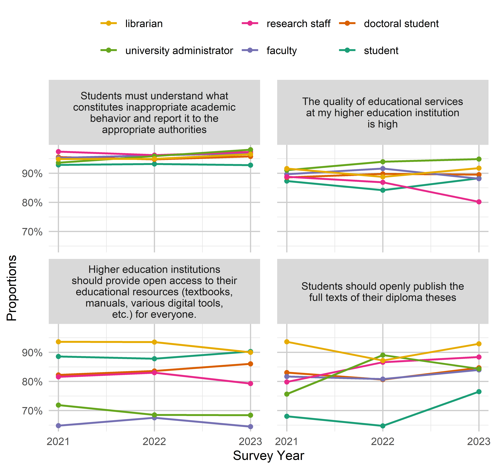
knitr::kable(out$data)| variable | value | roles | year | n | proportion |
|---|---|---|---|---|---|
| Higher education institutions should provide open access to their educational resources (textbooks, manuals, various digital tools, etc.) for everyone. | agree | student | 2021 | 3834 | 87.90% |
| Higher education institutions should provide open access to their educational resources (textbooks, manuals, various digital tools, etc.) for everyone. | agree | student | 2022 | 4844 | 87.55% |
| Higher education institutions should provide open access to their educational resources (textbooks, manuals, various digital tools, etc.) for everyone. | agree | student | 2023 | 2482 | 89.76% |
| Higher education institutions should provide open access to their educational resources (textbooks, manuals, various digital tools, etc.) for everyone. | agree | faculty | 2021 | 2050 | 64.81% |
| Higher education institutions should provide open access to their educational resources (textbooks, manuals, various digital tools, etc.) for everyone. | agree | faculty | 2022 | 1617 | 67.52% |
| Higher education institutions should provide open access to their educational resources (textbooks, manuals, various digital tools, etc.) for everyone. | agree | faculty | 2023 | 1332 | 64.47% |
| Higher education institutions should provide open access to their educational resources (textbooks, manuals, various digital tools, etc.) for everyone. | agree | research staff | 2021 | 93 | 81.58% |
| Higher education institutions should provide open access to their educational resources (textbooks, manuals, various digital tools, etc.) for everyone. | agree | research staff | 2022 | 171 | 83.01% |
| Higher education institutions should provide open access to their educational resources (textbooks, manuals, various digital tools, etc.) for everyone. | agree | research staff | 2023 | 88 | 79.28% |
| Higher education institutions should provide open access to their educational resources (textbooks, manuals, various digital tools, etc.) for everyone. | agree | university administrator | 2021 | 133 | 71.89% |
| Higher education institutions should provide open access to their educational resources (textbooks, manuals, various digital tools, etc.) for everyone. | agree | university administrator | 2022 | 98 | 68.53% |
| Higher education institutions should provide open access to their educational resources (textbooks, manuals, various digital tools, etc.) for everyone. | agree | university administrator | 2023 | 104 | 68.42% |
| Higher education institutions should provide open access to their educational resources (textbooks, manuals, various digital tools, etc.) for everyone. | agree | librarian | 2021 | 191 | 93.63% |
| Higher education institutions should provide open access to their educational resources (textbooks, manuals, various digital tools, etc.) for everyone. | agree | librarian | 2022 | 72 | 93.51% |
| Higher education institutions should provide open access to their educational resources (textbooks, manuals, various digital tools, etc.) for everyone. | agree | librarian | 2023 | 72 | 90.00% |
| Students must understand what constitutes inappropriate academic behavior and report it to the appropriate authorities | agree | student | 2021 | 4409 | 93.12% |
| Students must understand what constitutes inappropriate academic behavior and report it to the appropriate authorities | agree | student | 2022 | 5558 | 93.27% |
| Students must understand what constitutes inappropriate academic behavior and report it to the appropriate authorities | agree | student | 2023 | 2793 | 93.13% |
| Students must understand what constitutes inappropriate academic behavior and report it to the appropriate authorities | agree | faculty | 2021 | 3087 | 95.25% |
| Students must understand what constitutes inappropriate academic behavior and report it to the appropriate authorities | agree | faculty | 2022 | 2382 | 96.13% |
| Students must understand what constitutes inappropriate academic behavior and report it to the appropriate authorities | agree | faculty | 2023 | 2055 | 96.84% |
| Students must understand what constitutes inappropriate academic behavior and report it to the appropriate authorities | agree | research staff | 2021 | 113 | 97.41% |
| Students must understand what constitutes inappropriate academic behavior and report it to the appropriate authorities | agree | research staff | 2022 | 203 | 96.21% |
| Students must understand what constitutes inappropriate academic behavior and report it to the appropriate authorities | agree | research staff | 2023 | 108 | 97.30% |
| Students must understand what constitutes inappropriate academic behavior and report it to the appropriate authorities | agree | university administrator | 2021 | 176 | 93.62% |
| Students must understand what constitutes inappropriate academic behavior and report it to the appropriate authorities | agree | university administrator | 2022 | 140 | 95.89% |
| Students must understand what constitutes inappropriate academic behavior and report it to the appropriate authorities | agree | university administrator | 2023 | 152 | 98.06% |
| Students must understand what constitutes inappropriate academic behavior and report it to the appropriate authorities | agree | librarian | 2021 | 203 | 94.86% |
| Students must understand what constitutes inappropriate academic behavior and report it to the appropriate authorities | agree | librarian | 2022 | 75 | 94.94% |
| Students must understand what constitutes inappropriate academic behavior and report it to the appropriate authorities | agree | librarian | 2023 | 84 | 96.55% |
| Students should openly publish the full texts of their diploma theses | agree | student | 2021 | 3144 | 69.65% |
| Students should openly publish the full texts of their diploma theses | agree | student | 2022 | 3670 | 65.66% |
| Students should openly publish the full texts of their diploma theses | agree | student | 2023 | 2204 | 77.50% |
| Students should openly publish the full texts of their diploma theses | agree | faculty | 2021 | 2632 | 81.69% |
| Students should openly publish the full texts of their diploma theses | agree | faculty | 2022 | 1979 | 80.81% |
| Students should openly publish the full texts of their diploma theses | agree | faculty | 2023 | 1760 | 83.97% |
| Students should openly publish the full texts of their diploma theses | agree | research staff | 2021 | 91 | 79.82% |
| Students should openly publish the full texts of their diploma theses | agree | research staff | 2022 | 181 | 86.60% |
| Students should openly publish the full texts of their diploma theses | agree | research staff | 2023 | 99 | 88.39% |
| Students should openly publish the full texts of their diploma theses | agree | university administrator | 2021 | 143 | 75.66% |
| Students should openly publish the full texts of their diploma theses | agree | university administrator | 2022 | 130 | 89.04% |
| Students should openly publish the full texts of their diploma theses | agree | university administrator | 2023 | 129 | 84.31% |
| Students should openly publish the full texts of their diploma theses | agree | librarian | 2021 | 191 | 93.63% |
| Students should openly publish the full texts of their diploma theses | agree | librarian | 2022 | 68 | 87.18% |
| Students should openly publish the full texts of their diploma theses | agree | librarian | 2023 | 79 | 92.94% |
| The quality of educational services at my higher education institution is high | agree | student | 2021 | 4380 | 87.44% |
| The quality of educational services at my higher education institution is high | agree | student | 2022 | 5425 | 84.45% |
| The quality of educational services at my higher education institution is high | agree | student | 2023 | 2693 | 88.41% |
| The quality of educational services at my higher education institution is high | agree | faculty | 2021 | 2951 | 89.67% |
| The quality of educational services at my higher education institution is high | agree | faculty | 2022 | 2296 | 91.62% |
| The quality of educational services at my higher education institution is high | agree | faculty | 2023 | 1884 | 88.12% |
| The quality of educational services at my higher education institution is high | agree | research staff | 2021 | 103 | 88.79% |
| The quality of educational services at my higher education institution is high | agree | research staff | 2022 | 179 | 86.89% |
| The quality of educational services at my higher education institution is high | agree | research staff | 2023 | 89 | 80.18% |
| The quality of educational services at my higher education institution is high | agree | university administrator | 2021 | 173 | 91.05% |
| The quality of educational services at my higher education institution is high | agree | university administrator | 2022 | 140 | 93.96% |
| The quality of educational services at my higher education institution is high | agree | university administrator | 2023 | 148 | 94.87% |
| The quality of educational services at my higher education institution is high | agree | librarian | 2021 | 196 | 91.59% |
| The quality of educational services at my higher education institution is high | agree | librarian | 2022 | 71 | 88.75% |
| The quality of educational services at my higher education institution is high | agree | librarian | 2023 | 78 | 91.76% |
out <- plot_time_groups(roles, var_overview, eduf, group_var = roles,
type = "frequency")
out$pknitr::kable(out$data)| variable | value | roles | year | n | proportion |
|---|---|---|---|---|---|
| Students and teachers use unauthorized software (so-called “pirated software”). | often | student | 2021 | 559 | 17.17% |
| Students and teachers use unauthorized software (so-called “pirated software”). | often | student | 2022 | 846 | 20.43% |
| Students and teachers use unauthorized software (so-called “pirated software”). | often | student | 2023 | 440 | 20.16% |
| Students and teachers use unauthorized software (so-called “pirated software”). | often | faculty | 2021 | 556 | 26.26% |
| Students and teachers use unauthorized software (so-called “pirated software”). | often | faculty | 2022 | 360 | 22.43% |
| Students and teachers use unauthorized software (so-called “pirated software”). | often | faculty | 2023 | 442 | 30.01% |
| Students and teachers use unauthorized software (so-called “pirated software”). | often | research staff | 2021 | 22 | 27.85% |
| Students and teachers use unauthorized software (so-called “pirated software”). | often | research staff | 2022 | 56 | 41.18% |
| Students and teachers use unauthorized software (so-called “pirated software”). | often | research staff | 2023 | 42 | 51.85% |
| Students and teachers use unauthorized software (so-called “pirated software”). | often | university administrator | 2021 | 36 | 26.28% |
| Students and teachers use unauthorized software (so-called “pirated software”). | often | university administrator | 2022 | 34 | 31.48% |
| Students and teachers use unauthorized software (so-called “pirated software”). | often | university administrator | 2023 | 27 | 24.11% |
| Students and teachers use unauthorized software (so-called “pirated software”). | often | librarian | 2021 | 14 | 17.95% |
| Students and teachers use unauthorized software (so-called “pirated software”). | often | librarian | 2022 | 12 | 40.00% |
| Students and teachers use unauthorized software (so-called “pirated software”). | often | librarian | 2023 | 9 | 24.32% |
| Students help each other during exams or tests. | often | student | 2021 | 1578 | 36.40% |
| Students help each other during exams or tests. | often | student | 2022 | 1969 | 36.45% |
| Students help each other during exams or tests. | often | student | 2023 | 972 | 37.34% |
| Students help each other during exams or tests. | often | faculty | 2021 | 812 | 27.88% |
| Students help each other during exams or tests. | often | faculty | 2022 | 564 | 25.74% |
| Students help each other during exams or tests. | often | faculty | 2023 | 579 | 30.57% |
| Students help each other during exams or tests. | often | research staff | 2021 | 24 | 26.37% |
| Students help each other during exams or tests. | often | research staff | 2022 | 58 | 40.28% |
| Students help each other during exams or tests. | often | research staff | 2023 | 38 | 44.71% |
| Students help each other during exams or tests. | often | university administrator | 2021 | 50 | 29.24% |
| Students help each other during exams or tests. | often | university administrator | 2022 | 32 | 24.24% |
| Students help each other during exams or tests. | often | university administrator | 2023 | 48 | 33.33% |
| Students help each other during exams or tests. | often | librarian | 2021 | 43 | 35.25% |
| Students help each other during exams or tests. | often | librarian | 2022 | 28 | 49.12% |
| Students help each other during exams or tests. | often | librarian | 2023 | 19 | 32.76% |
| Students use cheat sheets, smartphones, or other means of cheating during exams or tests. | often | student | 2021 | 887 | 21.37% |
| Students use cheat sheets, smartphones, or other means of cheating during exams or tests. | often | student | 2022 | 1035 | 20.22% |
| Students use cheat sheets, smartphones, or other means of cheating during exams or tests. | often | student | 2023 | 611 | 24.54% |
| Students use cheat sheets, smartphones, or other means of cheating during exams or tests. | often | faculty | 2021 | 693 | 23.07% |
| Students use cheat sheets, smartphones, or other means of cheating during exams or tests. | often | faculty | 2022 | 465 | 20.80% |
| Students use cheat sheets, smartphones, or other means of cheating during exams or tests. | often | faculty | 2023 | 565 | 29.35% |
| Students use cheat sheets, smartphones, or other means of cheating during exams or tests. | often | research staff | 2021 | 12 | 13.95% |
| Students use cheat sheets, smartphones, or other means of cheating during exams or tests. | often | research staff | 2022 | 42 | 30.00% |
| Students use cheat sheets, smartphones, or other means of cheating during exams or tests. | often | research staff | 2023 | 33 | 37.93% |
| Students use cheat sheets, smartphones, or other means of cheating during exams or tests. | often | university administrator | 2021 | 32 | 18.60% |
| Students use cheat sheets, smartphones, or other means of cheating during exams or tests. | often | university administrator | 2022 | 25 | 18.38% |
| Students use cheat sheets, smartphones, or other means of cheating during exams or tests. | often | university administrator | 2023 | 38 | 27.54% |
| Students use cheat sheets, smartphones, or other means of cheating during exams or tests. | often | librarian | 2021 | 22 | 22.22% |
| Students use cheat sheets, smartphones, or other means of cheating during exams or tests. | often | librarian | 2022 | 10 | 22.22% |
| Students use cheat sheets, smartphones, or other means of cheating during exams or tests. | often | librarian | 2023 | 16 | 32.65% |
Institution/Administration
out <- plot_time_groups(roles, var_overview, adm, group_var = roles,
type = "frequency")
out$pknitr::kable(out$data)| variable | value | roles | year | n | proportion |
|---|---|---|---|---|---|
| Abuse of official position or authority to encourage academic dishonesty. | often | student | 2021 | 285 | 8.08% |
| Abuse of official position or authority to encourage academic dishonesty. | often | student | 2022 | 365 | 8.57% |
| Abuse of official position or authority to encourage academic dishonesty. | often | student | 2023 | 279 | 12.46% |
| Abuse of official position or authority to encourage academic dishonesty. | often | faculty | 2021 | 130 | 5.71% |
| Abuse of official position or authority to encourage academic dishonesty. | often | faculty | 2022 | 93 | 5.39% |
| Abuse of official position or authority to encourage academic dishonesty. | often | faculty | 2023 | 152 | 10.08% |
| Abuse of official position or authority to encourage academic dishonesty. | often | research staff | 2021 | 6 | 7.06% |
| Abuse of official position or authority to encourage academic dishonesty. | often | research staff | 2022 | 17 | 10.90% |
| Abuse of official position or authority to encourage academic dishonesty. | often | research staff | 2023 | 16 | 17.78% |
| Abuse of official position or authority to encourage academic dishonesty. | often | university administrator | 2021 | 8 | 4.97% |
| Abuse of official position or authority to encourage academic dishonesty. | often | university administrator | 2022 | 4 | 3.33% |
| Abuse of official position or authority to encourage academic dishonesty. | often | university administrator | 2023 | 6 | 4.55% |
| Abuse of official position or authority to encourage academic dishonesty. | often | librarian | 2021 | 3 | 2.94% |
| Abuse of official position or authority to encourage academic dishonesty. | often | librarian | 2022 | 2 | 6.90% |
| Abuse of official position or authority to encourage academic dishonesty. | often | librarian | 2023 | 4 | 9.52% |
| Falsely accusing a student or employee of misconduct or other violations. | often | student | 2021 | 262 | 7.43% |
| Falsely accusing a student or employee of misconduct or other violations. | often | student | 2022 | 352 | 7.91% |
| Falsely accusing a student or employee of misconduct or other violations. | often | student | 2023 | 276 | 12.42% |
| Falsely accusing a student or employee of misconduct or other violations. | often | faculty | 2021 | 67 | 2.97% |
| Falsely accusing a student or employee of misconduct or other violations. | often | faculty | 2022 | 55 | 3.21% |
| Falsely accusing a student or employee of misconduct or other violations. | often | faculty | 2023 | 82 | 5.47% |
| Falsely accusing a student or employee of misconduct or other violations. | often | research staff | 2021 | 2 | 2.35% |
| Falsely accusing a student or employee of misconduct or other violations. | often | research staff | 2022 | 12 | 7.74% |
| Falsely accusing a student or employee of misconduct or other violations. | often | research staff | 2023 | 8 | 9.20% |
| Falsely accusing a student or employee of misconduct or other violations. | often | university administrator | 2021 | 3 | 1.82% |
| Falsely accusing a student or employee of misconduct or other violations. | often | university administrator | 2022 | 2 | 1.74% |
| Falsely accusing a student or employee of misconduct or other violations. | often | university administrator | 2023 | 3 | 2.21% |
| Falsely accusing a student or employee of misconduct or other violations. | often | librarian | 2021 | 1 | 1.01% |
| Falsely accusing a student or employee of misconduct or other violations. | often | librarian | 2022 | 2 | 5.56% |
| Falsely accusing a student or employee of misconduct or other violations. | often | librarian | 2023 | 2 | 5.56% |
| Incitement to violate academic integrity. | often | student | 2021 | 222 | 6.04% |
| Incitement to violate academic integrity. | often | student | 2022 | 274 | 6.11% |
| Incitement to violate academic integrity. | often | student | 2023 | 245 | 10.63% |
| Incitement to violate academic integrity. | often | faculty | 2021 | 88 | 3.91% |
| Incitement to violate academic integrity. | often | faculty | 2022 | 51 | 2.95% |
| Incitement to violate academic integrity. | often | faculty | 2023 | 104 | 7.25% |
| Incitement to violate academic integrity. | often | research staff | 2021 | 5 | 5.95% |
| Incitement to violate academic integrity. | often | research staff | 2022 | 8 | 5.63% |
| Incitement to violate academic integrity. | often | research staff | 2023 | 5 | 6.49% |
| Incitement to violate academic integrity. | often | university administrator | 2021 | 4 | 2.96% |
| Incitement to violate academic integrity. | often | university administrator | 2022 | 2 | 1.83% |
| Incitement to violate academic integrity. | often | university administrator | 2023 | 6 | 4.92% |
| Incitement to violate academic integrity. | often | librarian | 2021 | 3 | 3.33% |
| Incitement to violate academic integrity. | often | librarian | 2022 | 2 | 5.71% |
| Incitement to violate academic integrity. | often | librarian | 2023 | 4 | 11.11% |
| The administration of the institution tolerates cases of academic dishonesty. | often | student | 2021 | 467 | 15.98% |
| The administration of the institution tolerates cases of academic dishonesty. | often | student | 2022 | 477 | 13.16% |
| The administration of the institution tolerates cases of academic dishonesty. | often | student | 2023 | 372 | 17.67% |
| The administration of the institution tolerates cases of academic dishonesty. | often | faculty | 2021 | 161 | 6.67% |
| The administration of the institution tolerates cases of academic dishonesty. | often | faculty | 2022 | 117 | 6.46% |
| The administration of the institution tolerates cases of academic dishonesty. | often | faculty | 2023 | 167 | 10.37% |
| The administration of the institution tolerates cases of academic dishonesty. | often | research staff | 2021 | 9 | 10.00% |
| The administration of the institution tolerates cases of academic dishonesty. | often | research staff | 2022 | 22 | 13.66% |
| The administration of the institution tolerates cases of academic dishonesty. | often | research staff | 2023 | 18 | 18.95% |
| The administration of the institution tolerates cases of academic dishonesty. | often | university administrator | 2021 | 12 | 7.32% |
| The administration of the institution tolerates cases of academic dishonesty. | often | university administrator | 2022 | 3 | 2.44% |
| The administration of the institution tolerates cases of academic dishonesty. | often | university administrator | 2023 | 8 | 5.76% |
| The administration of the institution tolerates cases of academic dishonesty. | often | librarian | 2021 | 6 | 6.38% |
| The administration of the institution tolerates cases of academic dishonesty. | often | librarian | 2022 | 2 | 4.76% |
| The administration of the institution tolerates cases of academic dishonesty. | often | librarian | 2023 | 5 | 9.62% |
| The university administration accuses and punishes whistleblowers of academic integrity violations. | often | student | 2021 | 551 | 24.22% |
| The university administration accuses and punishes whistleblowers of academic integrity violations. | often | student | 2022 | 621 | 23.25% |
| The university administration accuses and punishes whistleblowers of academic integrity violations. | often | student | 2023 | 459 | 27.37% |
| The university administration accuses and punishes whistleblowers of academic integrity violations. | often | faculty | 2021 | 259 | 14.62% |
| The university administration accuses and punishes whistleblowers of academic integrity violations. | often | faculty | 2022 | 217 | 16.39% |
| The university administration accuses and punishes whistleblowers of academic integrity violations. | often | faculty | 2023 | 222 | 17.98% |
| The university administration accuses and punishes whistleblowers of academic integrity violations. | often | research staff | 2021 | 14 | 21.88% |
| The university administration accuses and punishes whistleblowers of academic integrity violations. | often | research staff | 2022 | 17 | 15.04% |
| The university administration accuses and punishes whistleblowers of academic integrity violations. | often | research staff | 2023 | 10 | 14.29% |
| The university administration accuses and punishes whistleblowers of academic integrity violations. | often | university administrator | 2021 | 26 | 18.98% |
| The university administration accuses and punishes whistleblowers of academic integrity violations. | often | university administrator | 2022 | 24 | 20.51% |
| The university administration accuses and punishes whistleblowers of academic integrity violations. | often | university administrator | 2023 | 30 | 23.62% |
| The university administration accuses and punishes whistleblowers of academic integrity violations. | often | librarian | 2021 | 15 | 19.74% |
| The university administration accuses and punishes whistleblowers of academic integrity violations. | often | librarian | 2022 | 4 | 16.00% |
| The university administration accuses and punishes whistleblowers of academic integrity violations. | often | librarian | 2023 | 3 | 9.38% |
out <- plot_time_groups(roles, var_overview, "X15", group_var = roles)
out$p +
theme(legend.position = "right") +
scale_y_continuous(limits = c(0.75, 1), labels = scales::label_percent(), n.breaks = 3)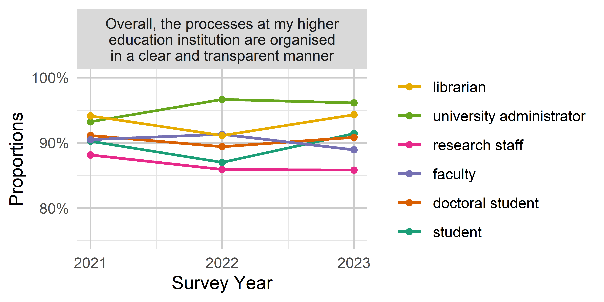
knitr::kable(out$data)| variable | value | roles | year | n | proportion |
|---|---|---|---|---|---|
| Overall, the processes at my higher education institution are organised in a clear and transparent manner | agree | student | 2021 | 4543 | 90.34% |
| Overall, the processes at my higher education institution are organised in a clear and transparent manner | agree | student | 2022 | 5610 | 87.14% |
| Overall, the processes at my higher education institution are organised in a clear and transparent manner | agree | student | 2023 | 2795 | 91.37% |
| Overall, the processes at my higher education institution are organised in a clear and transparent manner | agree | faculty | 2021 | 2976 | 90.51% |
| Overall, the processes at my higher education institution are organised in a clear and transparent manner | agree | faculty | 2022 | 2283 | 91.32% |
| Overall, the processes at my higher education institution are organised in a clear and transparent manner | agree | faculty | 2023 | 1897 | 88.94% |
| Overall, the processes at my higher education institution are organised in a clear and transparent manner | agree | research staff | 2021 | 104 | 88.14% |
| Overall, the processes at my higher education institution are organised in a clear and transparent manner | agree | research staff | 2022 | 177 | 85.92% |
| Overall, the processes at my higher education institution are organised in a clear and transparent manner | agree | research staff | 2023 | 97 | 85.84% |
| Overall, the processes at my higher education institution are organised in a clear and transparent manner | agree | university administrator | 2021 | 179 | 93.23% |
| Overall, the processes at my higher education institution are organised in a clear and transparent manner | agree | university administrator | 2022 | 145 | 96.67% |
| Overall, the processes at my higher education institution are organised in a clear and transparent manner | agree | university administrator | 2023 | 149 | 96.13% |
| Overall, the processes at my higher education institution are organised in a clear and transparent manner | agree | librarian | 2021 | 193 | 94.15% |
| Overall, the processes at my higher education institution are organised in a clear and transparent manner | agree | librarian | 2022 | 72 | 91.14% |
| Overall, the processes at my higher education institution are organised in a clear and transparent manner | agree | librarian | 2023 | 83 | 94.32% |
Students by Year
In the plots above, students were all grouped into one category. Since it is of interest how students’ perceptions differ depending on the stage of their studies, they are compared more closely in the subsequent figures (these could maybe added to the appendix).
students <- df %>%
filter(str_detect(X8, "student")) %>%
mutate(student_level = case_when(
X8 == "doctoral student - ScD (higher doctorate)" ~ "doctoral student - ScD",
TRUE ~ X8),
student_level = factor(student_level,
levels = c("student - 1st year", "student - 2nd year",
"student - 3rd year", "student - 4th year",
"master student", "doctoral student - PhD",
"doctoral student - ScD", "faculty")))Open Science
out <- plot_time_groups(students, var_overview, os, group_var = student_level,
legend_reverse = FALSE)
out$pknitr::kable(out$data)| variable | value | student_level | year | n | proportion |
|---|---|---|---|---|---|
| Authors of research papers and peer reviewers should be able to communicate directly without intermediaries. | agree | student - 1st year | 2021 | 801 | 89.50% |
| Authors of research papers and peer reviewers should be able to communicate directly without intermediaries. | agree | student - 1st year | 2022 | 1018 | 88.83% |
| Authors of research papers and peer reviewers should be able to communicate directly without intermediaries. | agree | student - 1st year | 2023 | 412 | 90.55% |
| Authors of research papers and peer reviewers should be able to communicate directly without intermediaries. | agree | student - 2nd year | 2021 | 690 | 87.90% |
| Authors of research papers and peer reviewers should be able to communicate directly without intermediaries. | agree | student - 2nd year | 2022 | 861 | 89.87% |
| Authors of research papers and peer reviewers should be able to communicate directly without intermediaries. | agree | student - 2nd year | 2023 | 373 | 90.10% |
| Authors of research papers and peer reviewers should be able to communicate directly without intermediaries. | agree | student - 3rd year | 2021 | 503 | 87.33% |
| Authors of research papers and peer reviewers should be able to communicate directly without intermediaries. | agree | student - 3rd year | 2022 | 825 | 88.52% |
| Authors of research papers and peer reviewers should be able to communicate directly without intermediaries. | agree | student - 3rd year | 2023 | 337 | 87.31% |
| Authors of research papers and peer reviewers should be able to communicate directly without intermediaries. | agree | student - 4th year | 2021 | 471 | 89.89% |
| Authors of research papers and peer reviewers should be able to communicate directly without intermediaries. | agree | student - 4th year | 2022 | 648 | 88.40% |
| Authors of research papers and peer reviewers should be able to communicate directly without intermediaries. | agree | student - 4th year | 2023 | 337 | 90.11% |
| Authors of research papers and peer reviewers should be able to communicate directly without intermediaries. | agree | master student | 2021 | 474 | 84.79% |
| Authors of research papers and peer reviewers should be able to communicate directly without intermediaries. | agree | master student | 2022 | 614 | 84.92% |
| Authors of research papers and peer reviewers should be able to communicate directly without intermediaries. | agree | master student | 2023 | 534 | 89.15% |
| Authors of research papers and peer reviewers should be able to communicate directly without intermediaries. | agree | doctoral student - PhD | 2021 | 296 | 71.84% |
| Authors of research papers and peer reviewers should be able to communicate directly without intermediaries. | agree | doctoral student - PhD | 2022 | 210 | 78.65% |
| Authors of research papers and peer reviewers should be able to communicate directly without intermediaries. | agree | doctoral student - PhD | 2023 | 268 | 85.08% |
| Authors of research papers and peer reviewers should be able to communicate directly without intermediaries. | agree | doctoral student - ScD | 2021 | 21 | 52.50% |
| Authors of research papers and peer reviewers should be able to communicate directly without intermediaries. | agree | doctoral student - ScD | 2022 | 24 | 72.73% |
| Authors of research papers and peer reviewers should be able to communicate directly without intermediaries. | agree | doctoral student - ScD | 2023 | 16 | 69.57% |
| Experimental data should be published as openly as possible. | agree | student - 1st year | 2021 | 787 | 80.72% |
| Experimental data should be published as openly as possible. | agree | student - 1st year | 2022 | 1050 | 80.83% |
| Experimental data should be published as openly as possible. | agree | student - 1st year | 2023 | 389 | 83.48% |
| Experimental data should be published as openly as possible. | agree | student - 2nd year | 2021 | 698 | 83.39% |
| Experimental data should be published as openly as possible. | agree | student - 2nd year | 2022 | 837 | 79.71% |
| Experimental data should be published as openly as possible. | agree | student - 2nd year | 2023 | 325 | 79.85% |
| Experimental data should be published as openly as possible. | agree | student - 3rd year | 2021 | 492 | 80.52% |
| Experimental data should be published as openly as possible. | agree | student - 3rd year | 2022 | 818 | 82.13% |
| Experimental data should be published as openly as possible. | agree | student - 3rd year | 2023 | 340 | 84.37% |
| Experimental data should be published as openly as possible. | agree | student - 4th year | 2021 | 430 | 77.90% |
| Experimental data should be published as openly as possible. | agree | student - 4th year | 2022 | 620 | 83.33% |
| Experimental data should be published as openly as possible. | agree | student - 4th year | 2023 | 326 | 84.90% |
| Experimental data should be published as openly as possible. | agree | master student | 2021 | 466 | 82.62% |
| Experimental data should be published as openly as possible. | agree | master student | 2022 | 613 | 82.95% |
| Experimental data should be published as openly as possible. | agree | master student | 2023 | 495 | 81.55% |
| Experimental data should be published as openly as possible. | agree | doctoral student - PhD | 2021 | 348 | 82.66% |
| Experimental data should be published as openly as possible. | agree | doctoral student - PhD | 2022 | 224 | 81.45% |
| Experimental data should be published as openly as possible. | agree | doctoral student - PhD | 2023 | 257 | 79.57% |
| Experimental data should be published as openly as possible. | agree | doctoral student - ScD | 2021 | 38 | 92.68% |
| Experimental data should be published as openly as possible. | agree | doctoral student - ScD | 2022 | 28 | 90.32% |
| Experimental data should be published as openly as possible. | agree | doctoral student - ScD | 2023 | 17 | 77.27% |
| I can explain what “open science” is. | agree | student - 1st year | 2021 | 786 | 82.30% |
| I can explain what “open science” is. | agree | student - 1st year | 2022 | 938 | 78.56% |
| I can explain what “open science” is. | agree | student - 1st year | 2023 | 331 | 76.62% |
| I can explain what “open science” is. | agree | student - 2nd year | 2021 | 682 | 82.57% |
| I can explain what “open science” is. | agree | student - 2nd year | 2022 | 815 | 79.75% |
| I can explain what “open science” is. | agree | student - 2nd year | 2023 | 311 | 79.74% |
| I can explain what “open science” is. | agree | student - 3rd year | 2021 | 500 | 84.46% |
| I can explain what “open science” is. | agree | student - 3rd year | 2022 | 777 | 81.11% |
| I can explain what “open science” is. | agree | student - 3rd year | 2023 | 342 | 87.47% |
| I can explain what “open science” is. | agree | student - 4th year | 2021 | 476 | 87.66% |
| I can explain what “open science” is. | agree | student - 4th year | 2022 | 608 | 82.61% |
| I can explain what “open science” is. | agree | student - 4th year | 2023 | 321 | 82.73% |
| I can explain what “open science” is. | agree | master student | 2021 | 537 | 91.95% |
| I can explain what “open science” is. | agree | master student | 2022 | 606 | 85.23% |
| I can explain what “open science” is. | agree | master student | 2023 | 504 | 85.57% |
| I can explain what “open science” is. | agree | doctoral student - PhD | 2021 | 388 | 93.49% |
| I can explain what “open science” is. | agree | doctoral student - PhD | 2022 | 258 | 95.20% |
| I can explain what “open science” is. | agree | doctoral student - PhD | 2023 | 283 | 90.13% |
| I can explain what “open science” is. | agree | doctoral student - ScD | 2021 | 42 | 100.00% |
| I can explain what “open science” is. | agree | doctoral student - ScD | 2022 | 32 | 96.97% |
| I can explain what “open science” is. | agree | doctoral student - ScD | 2023 | 20 | 90.91% |
| If software development is part of a research project, the source code should be published alongside the relevant scientific papers. | agree | student - 1st year | 2021 | 583 | 70.67% |
| If software development is part of a research project, the source code should be published alongside the relevant scientific papers. | agree | student - 1st year | 2022 | 704 | 66.23% |
| If software development is part of a research project, the source code should be published alongside the relevant scientific papers. | agree | student - 1st year | 2023 | 323 | 76.36% |
| If software development is part of a research project, the source code should be published alongside the relevant scientific papers. | agree | student - 2nd year | 2021 | 502 | 70.90% |
| If software development is part of a research project, the source code should be published alongside the relevant scientific papers. | agree | student - 2nd year | 2022 | 590 | 64.98% |
| If software development is part of a research project, the source code should be published alongside the relevant scientific papers. | agree | student - 2nd year | 2023 | 275 | 71.43% |
| If software development is part of a research project, the source code should be published alongside the relevant scientific papers. | agree | student - 3rd year | 2021 | 357 | 67.61% |
| If software development is part of a research project, the source code should be published alongside the relevant scientific papers. | agree | student - 3rd year | 2022 | 596 | 68.51% |
| If software development is part of a research project, the source code should be published alongside the relevant scientific papers. | agree | student - 3rd year | 2023 | 275 | 75.97% |
| If software development is part of a research project, the source code should be published alongside the relevant scientific papers. | agree | student - 4th year | 2021 | 310 | 65.40% |
| If software development is part of a research project, the source code should be published alongside the relevant scientific papers. | agree | student - 4th year | 2022 | 445 | 67.94% |
| If software development is part of a research project, the source code should be published alongside the relevant scientific papers. | agree | student - 4th year | 2023 | 255 | 70.64% |
| If software development is part of a research project, the source code should be published alongside the relevant scientific papers. | agree | master student | 2021 | 303 | 59.30% |
| If software development is part of a research project, the source code should be published alongside the relevant scientific papers. | agree | master student | 2022 | 399 | 62.64% |
| If software development is part of a research project, the source code should be published alongside the relevant scientific papers. | agree | master student | 2023 | 374 | 67.75% |
| If software development is part of a research project, the source code should be published alongside the relevant scientific papers. | agree | doctoral student - PhD | 2021 | 205 | 58.07% |
| If software development is part of a research project, the source code should be published alongside the relevant scientific papers. | agree | doctoral student - PhD | 2022 | 127 | 54.51% |
| If software development is part of a research project, the source code should be published alongside the relevant scientific papers. | agree | doctoral student - PhD | 2023 | 189 | 63.64% |
| If software development is part of a research project, the source code should be published alongside the relevant scientific papers. | agree | doctoral student - ScD | 2021 | 24 | 66.67% |
| If software development is part of a research project, the source code should be published alongside the relevant scientific papers. | agree | doctoral student - ScD | 2022 | 11 | 44.00% |
| If software development is part of a research project, the source code should be published alongside the relevant scientific papers. | agree | doctoral student - ScD | 2023 | 10 | 50.00% |
| Research papers should be openly available even before the official peer review process, i.e. before a thorough review of their content. | agree | student - 1st year | 2021 | 402 | 38.36% |
| Research papers should be openly available even before the official peer review process, i.e. before a thorough review of their content. | agree | student - 1st year | 2022 | 522 | 39.13% |
| Research papers should be openly available even before the official peer review process, i.e. before a thorough review of their content. | agree | student - 1st year | 2023 | 240 | 48.88% |
| Research papers should be openly available even before the official peer review process, i.e. before a thorough review of their content. | agree | student - 2nd year | 2021 | 373 | 41.68% |
| Research papers should be openly available even before the official peer review process, i.e. before a thorough review of their content. | agree | student - 2nd year | 2022 | 394 | 34.77% |
| Research papers should be openly available even before the official peer review process, i.e. before a thorough review of their content. | agree | student - 2nd year | 2023 | 198 | 46.70% |
| Research papers should be openly available even before the official peer review process, i.e. before a thorough review of their content. | agree | student - 3rd year | 2021 | 248 | 38.39% |
| Research papers should be openly available even before the official peer review process, i.e. before a thorough review of their content. | agree | student - 3rd year | 2022 | 388 | 36.64% |
| Research papers should be openly available even before the official peer review process, i.e. before a thorough review of their content. | agree | student - 3rd year | 2023 | 218 | 52.78% |
| Research papers should be openly available even before the official peer review process, i.e. before a thorough review of their content. | agree | student - 4th year | 2021 | 201 | 34.48% |
| Research papers should be openly available even before the official peer review process, i.e. before a thorough review of their content. | agree | student - 4th year | 2022 | 285 | 35.98% |
| Research papers should be openly available even before the official peer review process, i.e. before a thorough review of their content. | agree | student - 4th year | 2023 | 202 | 49.15% |
| Research papers should be openly available even before the official peer review process, i.e. before a thorough review of their content. | agree | master student | 2021 | 208 | 33.82% |
| Research papers should be openly available even before the official peer review process, i.e. before a thorough review of their content. | agree | master student | 2022 | 275 | 36.04% |
| Research papers should be openly available even before the official peer review process, i.e. before a thorough review of their content. | agree | master student | 2023 | 282 | 46.23% |
| Research papers should be openly available even before the official peer review process, i.e. before a thorough review of their content. | agree | doctoral student - PhD | 2021 | 132 | 31.13% |
| Research papers should be openly available even before the official peer review process, i.e. before a thorough review of their content. | agree | doctoral student - PhD | 2022 | 89 | 32.25% |
| Research papers should be openly available even before the official peer review process, i.e. before a thorough review of their content. | agree | doctoral student - PhD | 2023 | 145 | 45.74% |
| Research papers should be openly available even before the official peer review process, i.e. before a thorough review of their content. | agree | doctoral student - ScD | 2021 | 16 | 39.02% |
| Research papers should be openly available even before the official peer review process, i.e. before a thorough review of their content. | agree | doctoral student - ScD | 2022 | 11 | 32.35% |
| Research papers should be openly available even before the official peer review process, i.e. before a thorough review of their content. | agree | doctoral student - ScD | 2023 | 8 | 38.10% |
| Research results should be in open access, i.e. freely available to the academic community and the general public. | agree | student - 1st year | 2021 | 1064 | 90.09% |
| Research results should be in open access, i.e. freely available to the academic community and the general public. | agree | student - 1st year | 2022 | 1361 | 90.73% |
| Research results should be in open access, i.e. freely available to the academic community and the general public. | agree | student - 1st year | 2023 | 478 | 91.22% |
| Research results should be in open access, i.e. freely available to the academic community and the general public. | agree | student - 2nd year | 2021 | 905 | 90.41% |
| Research results should be in open access, i.e. freely available to the academic community and the general public. | agree | student - 2nd year | 2022 | 1103 | 90.26% |
| Research results should be in open access, i.e. freely available to the academic community and the general public. | agree | student - 2nd year | 2023 | 428 | 92.44% |
| Research results should be in open access, i.e. freely available to the academic community and the general public. | agree | student - 3rd year | 2021 | 652 | 91.19% |
| Research results should be in open access, i.e. freely available to the academic community and the general public. | agree | student - 3rd year | 2022 | 1076 | 91.89% |
| Research results should be in open access, i.e. freely available to the academic community and the general public. | agree | student - 3rd year | 2023 | 416 | 94.55% |
| Research results should be in open access, i.e. freely available to the academic community and the general public. | agree | student - 4th year | 2021 | 577 | 89.74% |
| Research results should be in open access, i.e. freely available to the academic community and the general public. | agree | student - 4th year | 2022 | 794 | 91.79% |
| Research results should be in open access, i.e. freely available to the academic community and the general public. | agree | student - 4th year | 2023 | 403 | 94.38% |
| Research results should be in open access, i.e. freely available to the academic community and the general public. | agree | master student | 2021 | 601 | 91.48% |
| Research results should be in open access, i.e. freely available to the academic community and the general public. | agree | master student | 2022 | 773 | 92.80% |
| Research results should be in open access, i.e. freely available to the academic community and the general public. | agree | master student | 2023 | 602 | 91.63% |
| Research results should be in open access, i.e. freely available to the academic community and the general public. | agree | doctoral student - PhD | 2021 | 413 | 92.81% |
| Research results should be in open access, i.e. freely available to the academic community and the general public. | agree | doctoral student - PhD | 2022 | 266 | 91.41% |
| Research results should be in open access, i.e. freely available to the academic community and the general public. | agree | doctoral student - PhD | 2023 | 315 | 94.03% |
| Research results should be in open access, i.e. freely available to the academic community and the general public. | agree | doctoral student - ScD | 2021 | 40 | 93.02% |
| Research results should be in open access, i.e. freely available to the academic community and the general public. | agree | doctoral student - ScD | 2022 | 31 | 88.57% |
| Research results should be in open access, i.e. freely available to the academic community and the general public. | agree | doctoral student - ScD | 2023 | 22 | 91.67% |
| Researchers should invest time in describing their experimental data with appropriate metadata so that the data can be easily found and reused. | agree | student - 1st year | 2021 | 764 | 85.27% |
| Researchers should invest time in describing their experimental data with appropriate metadata so that the data can be easily found and reused. | agree | student - 1st year | 2022 | 977 | 85.18% |
| Researchers should invest time in describing their experimental data with appropriate metadata so that the data can be easily found and reused. | agree | student - 1st year | 2023 | 373 | 85.94% |
| Researchers should invest time in describing their experimental data with appropriate metadata so that the data can be easily found and reused. | agree | student - 2nd year | 2021 | 641 | 84.34% |
| Researchers should invest time in describing their experimental data with appropriate metadata so that the data can be easily found and reused. | agree | student - 2nd year | 2022 | 780 | 81.25% |
| Researchers should invest time in describing their experimental data with appropriate metadata so that the data can be easily found and reused. | agree | student - 2nd year | 2023 | 335 | 82.11% |
| Researchers should invest time in describing their experimental data with appropriate metadata so that the data can be easily found and reused. | agree | student - 3rd year | 2021 | 458 | 80.78% |
| Researchers should invest time in describing their experimental data with appropriate metadata so that the data can be easily found and reused. | agree | student - 3rd year | 2022 | 769 | 85.16% |
| Researchers should invest time in describing their experimental data with appropriate metadata so that the data can be easily found and reused. | agree | student - 3rd year | 2023 | 335 | 86.56% |
| Researchers should invest time in describing their experimental data with appropriate metadata so that the data can be easily found and reused. | agree | student - 4th year | 2021 | 407 | 78.27% |
| Researchers should invest time in describing their experimental data with appropriate metadata so that the data can be easily found and reused. | agree | student - 4th year | 2022 | 596 | 85.51% |
| Researchers should invest time in describing their experimental data with appropriate metadata so that the data can be easily found and reused. | agree | student - 4th year | 2023 | 316 | 83.38% |
| Researchers should invest time in describing their experimental data with appropriate metadata so that the data can be easily found and reused. | agree | master student | 2021 | 443 | 81.89% |
| Researchers should invest time in describing their experimental data with appropriate metadata so that the data can be easily found and reused. | agree | master student | 2022 | 552 | 83.01% |
| Researchers should invest time in describing their experimental data with appropriate metadata so that the data can be easily found and reused. | agree | master student | 2023 | 491 | 83.36% |
| Researchers should invest time in describing their experimental data with appropriate metadata so that the data can be easily found and reused. | agree | doctoral student - PhD | 2021 | 298 | 76.80% |
| Researchers should invest time in describing their experimental data with appropriate metadata so that the data can be easily found and reused. | agree | doctoral student - PhD | 2022 | 202 | 82.45% |
| Researchers should invest time in describing their experimental data with appropriate metadata so that the data can be easily found and reused. | agree | doctoral student - PhD | 2023 | 249 | 81.37% |
| Researchers should invest time in describing their experimental data with appropriate metadata so that the data can be easily found and reused. | agree | doctoral student - ScD | 2021 | 29 | 72.50% |
| Researchers should invest time in describing their experimental data with appropriate metadata so that the data can be easily found and reused. | agree | doctoral student - ScD | 2022 | 23 | 79.31% |
| Researchers should invest time in describing their experimental data with appropriate metadata so that the data can be easily found and reused. | agree | doctoral student - ScD | 2023 | 14 | 73.68% |
| Researchers should publish author’s versions of manuscripts on open online resources such as Zenodo, institutional repositories, etc. | agree | student - 1st year | 2021 | 662 | 81.13% |
| Researchers should publish author’s versions of manuscripts on open online resources such as Zenodo, institutional repositories, etc. | agree | student - 1st year | 2022 | 771 | 78.43% |
| Researchers should publish author’s versions of manuscripts on open online resources such as Zenodo, institutional repositories, etc. | agree | student - 1st year | 2023 | 354 | 81.94% |
| Researchers should publish author’s versions of manuscripts on open online resources such as Zenodo, institutional repositories, etc. | agree | student - 2nd year | 2021 | 538 | 79.94% |
| Researchers should publish author’s versions of manuscripts on open online resources such as Zenodo, institutional repositories, etc. | agree | student - 2nd year | 2022 | 685 | 78.38% |
| Researchers should publish author’s versions of manuscripts on open online resources such as Zenodo, institutional repositories, etc. | agree | student - 2nd year | 2023 | 325 | 83.12% |
| Researchers should publish author’s versions of manuscripts on open online resources such as Zenodo, institutional repositories, etc. | agree | student - 3rd year | 2021 | 412 | 77.74% |
| Researchers should publish author’s versions of manuscripts on open online resources such as Zenodo, institutional repositories, etc. | agree | student - 3rd year | 2022 | 703 | 83.89% |
| Researchers should publish author’s versions of manuscripts on open online resources such as Zenodo, institutional repositories, etc. | agree | student - 3rd year | 2023 | 317 | 85.68% |
| Researchers should publish author’s versions of manuscripts on open online resources such as Zenodo, institutional repositories, etc. | agree | student - 4th year | 2021 | 361 | 75.84% |
| Researchers should publish author’s versions of manuscripts on open online resources such as Zenodo, institutional repositories, etc. | agree | student - 4th year | 2022 | 517 | 79.78% |
| Researchers should publish author’s versions of manuscripts on open online resources such as Zenodo, institutional repositories, etc. | agree | student - 4th year | 2023 | 297 | 81.82% |
| Researchers should publish author’s versions of manuscripts on open online resources such as Zenodo, institutional repositories, etc. | agree | master student | 2021 | 414 | 79.01% |
| Researchers should publish author’s versions of manuscripts on open online resources such as Zenodo, institutional repositories, etc. | agree | master student | 2022 | 507 | 79.34% |
| Researchers should publish author’s versions of manuscripts on open online resources such as Zenodo, institutional repositories, etc. | agree | master student | 2023 | 451 | 79.68% |
| Researchers should publish author’s versions of manuscripts on open online resources such as Zenodo, institutional repositories, etc. | agree | doctoral student - PhD | 2021 | 301 | 77.58% |
| Researchers should publish author’s versions of manuscripts on open online resources such as Zenodo, institutional repositories, etc. | agree | doctoral student - PhD | 2022 | 170 | 70.83% |
| Researchers should publish author’s versions of manuscripts on open online resources such as Zenodo, institutional repositories, etc. | agree | doctoral student - PhD | 2023 | 212 | 72.85% |
| Researchers should publish author’s versions of manuscripts on open online resources such as Zenodo, institutional repositories, etc. | agree | doctoral student - ScD | 2021 | 29 | 72.50% |
| Researchers should publish author’s versions of manuscripts on open online resources such as Zenodo, institutional repositories, etc. | agree | doctoral student - ScD | 2022 | 18 | 69.23% |
| Researchers should publish author’s versions of manuscripts on open online resources such as Zenodo, institutional repositories, etc. | agree | doctoral student - ScD | 2023 | 14 | 66.67% |
| The names of peer reviewers of research papers should be made public, regardless of whether their conclusion is positive or negative. | agree | student - 1st year | 2021 | 902 | 89.04% |
| The names of peer reviewers of research papers should be made public, regardless of whether their conclusion is positive or negative. | agree | student - 1st year | 2022 | 1136 | 87.59% |
| The names of peer reviewers of research papers should be made public, regardless of whether their conclusion is positive or negative. | agree | student - 1st year | 2023 | 399 | 85.62% |
| The names of peer reviewers of research papers should be made public, regardless of whether their conclusion is positive or negative. | agree | student - 2nd year | 2021 | 807 | 90.67% |
| The names of peer reviewers of research papers should be made public, regardless of whether their conclusion is positive or negative. | agree | student - 2nd year | 2022 | 951 | 88.71% |
| The names of peer reviewers of research papers should be made public, regardless of whether their conclusion is positive or negative. | agree | student - 2nd year | 2023 | 380 | 88.79% |
| The names of peer reviewers of research papers should be made public, regardless of whether their conclusion is positive or negative. | agree | student - 3rd year | 2021 | 558 | 89.00% |
| The names of peer reviewers of research papers should be made public, regardless of whether their conclusion is positive or negative. | agree | student - 3rd year | 2022 | 924 | 90.06% |
| The names of peer reviewers of research papers should be made public, regardless of whether their conclusion is positive or negative. | agree | student - 3rd year | 2023 | 359 | 89.30% |
| The names of peer reviewers of research papers should be made public, regardless of whether their conclusion is positive or negative. | agree | student - 4th year | 2021 | 505 | 88.44% |
| The names of peer reviewers of research papers should be made public, regardless of whether their conclusion is positive or negative. | agree | student - 4th year | 2022 | 687 | 87.63% |
| The names of peer reviewers of research papers should be made public, regardless of whether their conclusion is positive or negative. | agree | student - 4th year | 2023 | 361 | 90.93% |
| The names of peer reviewers of research papers should be made public, regardless of whether their conclusion is positive or negative. | agree | master student | 2021 | 555 | 90.98% |
| The names of peer reviewers of research papers should be made public, regardless of whether their conclusion is positive or negative. | agree | master student | 2022 | 694 | 92.16% |
| The names of peer reviewers of research papers should be made public, regardless of whether their conclusion is positive or negative. | agree | master student | 2023 | 563 | 90.95% |
| The names of peer reviewers of research papers should be made public, regardless of whether their conclusion is positive or negative. | agree | doctoral student - PhD | 2021 | 353 | 84.05% |
| The names of peer reviewers of research papers should be made public, regardless of whether their conclusion is positive or negative. | agree | doctoral student - PhD | 2022 | 246 | 86.93% |
| The names of peer reviewers of research papers should be made public, regardless of whether their conclusion is positive or negative. | agree | doctoral student - PhD | 2023 | 283 | 88.16% |
| The names of peer reviewers of research papers should be made public, regardless of whether their conclusion is positive or negative. | agree | doctoral student - ScD | 2021 | 22 | 56.41% |
| The names of peer reviewers of research papers should be made public, regardless of whether their conclusion is positive or negative. | agree | doctoral student - ScD | 2022 | 23 | 69.70% |
| The names of peer reviewers of research papers should be made public, regardless of whether their conclusion is positive or negative. | agree | doctoral student - ScD | 2023 | 13 | 61.90% |
| The texts of positive and negative peer reviews of research papers should be published alongside these papers. | agree | student - 1st year | 2021 | 798 | 83.30% |
| The texts of positive and negative peer reviews of research papers should be published alongside these papers. | agree | student - 1st year | 2022 | 995 | 83.06% |
| The texts of positive and negative peer reviews of research papers should be published alongside these papers. | agree | student - 1st year | 2023 | 387 | 83.77% |
| The texts of positive and negative peer reviews of research papers should be published alongside these papers. | agree | student - 2nd year | 2021 | 685 | 84.57% |
| The texts of positive and negative peer reviews of research papers should be published alongside these papers. | agree | student - 2nd year | 2022 | 831 | 82.93% |
| The texts of positive and negative peer reviews of research papers should be published alongside these papers. | agree | student - 2nd year | 2023 | 342 | 81.82% |
| The texts of positive and negative peer reviews of research papers should be published alongside these papers. | agree | student - 3rd year | 2021 | 504 | 83.44% |
| The texts of positive and negative peer reviews of research papers should be published alongside these papers. | agree | student - 3rd year | 2022 | 831 | 85.49% |
| The texts of positive and negative peer reviews of research papers should be published alongside these papers. | agree | student - 3rd year | 2023 | 339 | 85.61% |
| The texts of positive and negative peer reviews of research papers should be published alongside these papers. | agree | student - 4th year | 2021 | 446 | 82.14% |
| The texts of positive and negative peer reviews of research papers should be published alongside these papers. | agree | student - 4th year | 2022 | 609 | 83.20% |
| The texts of positive and negative peer reviews of research papers should be published alongside these papers. | agree | student - 4th year | 2023 | 335 | 85.90% |
| The texts of positive and negative peer reviews of research papers should be published alongside these papers. | agree | master student | 2021 | 501 | 86.38% |
| The texts of positive and negative peer reviews of research papers should be published alongside these papers. | agree | master student | 2022 | 632 | 85.87% |
| The texts of positive and negative peer reviews of research papers should be published alongside these papers. | agree | master student | 2023 | 524 | 85.90% |
| The texts of positive and negative peer reviews of research papers should be published alongside these papers. | agree | doctoral student - PhD | 2021 | 306 | 74.45% |
| The texts of positive and negative peer reviews of research papers should be published alongside these papers. | agree | doctoral student - PhD | 2022 | 199 | 75.95% |
| The texts of positive and negative peer reviews of research papers should be published alongside these papers. | agree | doctoral student - PhD | 2023 | 255 | 81.21% |
| The texts of positive and negative peer reviews of research papers should be published alongside these papers. | agree | doctoral student - ScD | 2021 | 19 | 48.72% |
| The texts of positive and negative peer reviews of research papers should be published alongside these papers. | agree | doctoral student - ScD | 2022 | 15 | 48.39% |
| The texts of positive and negative peer reviews of research papers should be published alongside these papers. | agree | doctoral student - ScD | 2023 | 14 | 66.67% |
Reporting and Academic Integrity
out <- plot_time_groups(students, var_overview, raia, group_var = student_level,
legend_reverse = FALSE)
out$p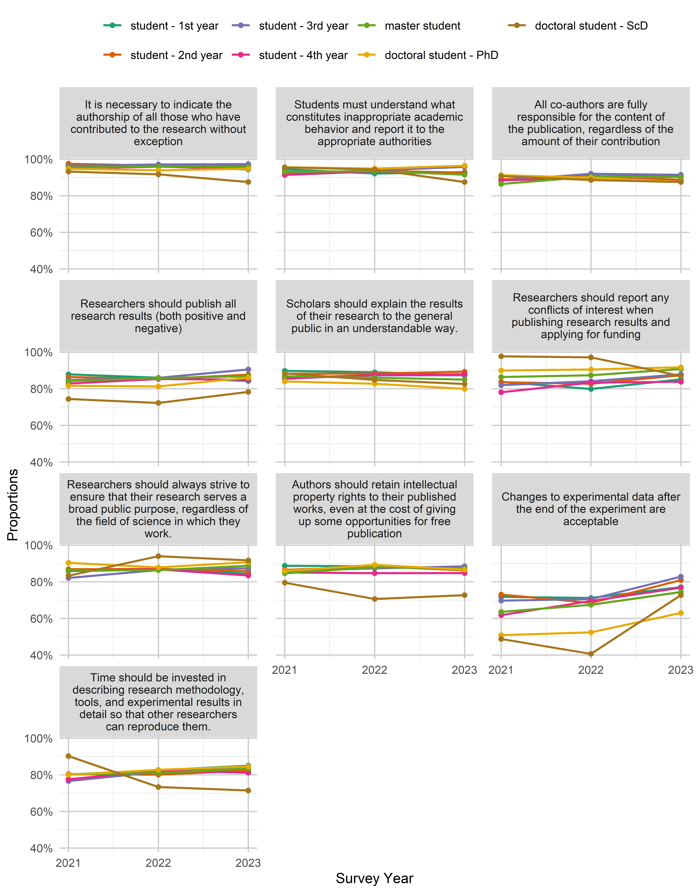
knitr::kable(out$data)| variable | value | student_level | year | n | proportion |
|---|---|---|---|---|---|
| All co-authors are fully responsible for the content of the publication, regardless of the amount of their contribution | agree | student - 1st year | 2021 | 1105 | 88.61% |
| All co-authors are fully responsible for the content of the publication, regardless of the amount of their contribution | agree | student - 1st year | 2022 | 1416 | 91.71% |
| All co-authors are fully responsible for the content of the publication, regardless of the amount of their contribution | agree | student - 1st year | 2023 | 507 | 90.86% |
| All co-authors are fully responsible for the content of the publication, regardless of the amount of their contribution | agree | student - 2nd year | 2021 | 933 | 88.94% |
| All co-authors are fully responsible for the content of the publication, regardless of the amount of their contribution | agree | student - 2nd year | 2022 | 1144 | 90.65% |
| All co-authors are fully responsible for the content of the publication, regardless of the amount of their contribution | agree | student - 2nd year | 2023 | 437 | 88.64% |
| All co-authors are fully responsible for the content of the publication, regardless of the amount of their contribution | agree | student - 3rd year | 2021 | 669 | 88.26% |
| All co-authors are fully responsible for the content of the publication, regardless of the amount of their contribution | agree | student - 3rd year | 2022 | 1135 | 91.98% |
| All co-authors are fully responsible for the content of the publication, regardless of the amount of their contribution | agree | student - 3rd year | 2023 | 435 | 91.39% |
| All co-authors are fully responsible for the content of the publication, regardless of the amount of their contribution | agree | student - 4th year | 2021 | 591 | 88.34% |
| All co-authors are fully responsible for the content of the publication, regardless of the amount of their contribution | agree | student - 4th year | 2022 | 812 | 89.72% |
| All co-authors are fully responsible for the content of the publication, regardless of the amount of their contribution | agree | student - 4th year | 2023 | 395 | 88.17% |
| All co-authors are fully responsible for the content of the publication, regardless of the amount of their contribution | agree | master student | 2021 | 572 | 86.40% |
| All co-authors are fully responsible for the content of the publication, regardless of the amount of their contribution | agree | master student | 2022 | 770 | 90.38% |
| All co-authors are fully responsible for the content of the publication, regardless of the amount of their contribution | agree | master student | 2023 | 611 | 90.12% |
| All co-authors are fully responsible for the content of the publication, regardless of the amount of their contribution | agree | doctoral student - PhD | 2021 | 415 | 91.21% |
| All co-authors are fully responsible for the content of the publication, regardless of the amount of their contribution | agree | doctoral student - PhD | 2022 | 265 | 89.83% |
| All co-authors are fully responsible for the content of the publication, regardless of the amount of their contribution | agree | doctoral student - PhD | 2023 | 298 | 87.65% |
| All co-authors are fully responsible for the content of the publication, regardless of the amount of their contribution | agree | doctoral student - ScD | 2021 | 39 | 90.70% |
| All co-authors are fully responsible for the content of the publication, regardless of the amount of their contribution | agree | doctoral student - ScD | 2022 | 31 | 88.57% |
| All co-authors are fully responsible for the content of the publication, regardless of the amount of their contribution | agree | doctoral student - ScD | 2023 | 21 | 87.50% |
| Authors should retain intellectual property rights to their published works, even at the cost of giving up some opportunities for free publication | agree | student - 1st year | 2021 | 863 | 88.79% |
| Authors should retain intellectual property rights to their published works, even at the cost of giving up some opportunities for free publication | agree | student - 1st year | 2022 | 1095 | 88.45% |
| Authors should retain intellectual property rights to their published works, even at the cost of giving up some opportunities for free publication | agree | student - 1st year | 2023 | 410 | 86.68% |
| Authors should retain intellectual property rights to their published works, even at the cost of giving up some opportunities for free publication | agree | student - 2nd year | 2021 | 721 | 86.45% |
| Authors should retain intellectual property rights to their published works, even at the cost of giving up some opportunities for free publication | agree | student - 2nd year | 2022 | 918 | 88.35% |
| Authors should retain intellectual property rights to their published works, even at the cost of giving up some opportunities for free publication | agree | student - 2nd year | 2023 | 365 | 86.29% |
| Authors should retain intellectual property rights to their published works, even at the cost of giving up some opportunities for free publication | agree | student - 3rd year | 2021 | 529 | 85.88% |
| Authors should retain intellectual property rights to their published works, even at the cost of giving up some opportunities for free publication | agree | student - 3rd year | 2022 | 874 | 87.31% |
| Authors should retain intellectual property rights to their published works, even at the cost of giving up some opportunities for free publication | agree | student - 3rd year | 2023 | 353 | 88.47% |
| Authors should retain intellectual property rights to their published works, even at the cost of giving up some opportunities for free publication | agree | student - 4th year | 2021 | 479 | 85.08% |
| Authors should retain intellectual property rights to their published works, even at the cost of giving up some opportunities for free publication | agree | student - 4th year | 2022 | 632 | 84.72% |
| Authors should retain intellectual property rights to their published works, even at the cost of giving up some opportunities for free publication | agree | student - 4th year | 2023 | 339 | 84.75% |
| Authors should retain intellectual property rights to their published works, even at the cost of giving up some opportunities for free publication | agree | master student | 2021 | 484 | 84.62% |
| Authors should retain intellectual property rights to their published works, even at the cost of giving up some opportunities for free publication | agree | master student | 2022 | 632 | 88.02% |
| Authors should retain intellectual property rights to their published works, even at the cost of giving up some opportunities for free publication | agree | master student | 2023 | 530 | 87.17% |
| Authors should retain intellectual property rights to their published works, even at the cost of giving up some opportunities for free publication | agree | doctoral student - PhD | 2021 | 336 | 85.93% |
| Authors should retain intellectual property rights to their published works, even at the cost of giving up some opportunities for free publication | agree | doctoral student - PhD | 2022 | 241 | 89.26% |
| Authors should retain intellectual property rights to their published works, even at the cost of giving up some opportunities for free publication | agree | doctoral student - PhD | 2023 | 278 | 86.60% |
| Authors should retain intellectual property rights to their published works, even at the cost of giving up some opportunities for free publication | agree | doctoral student - ScD | 2021 | 31 | 79.49% |
| Authors should retain intellectual property rights to their published works, even at the cost of giving up some opportunities for free publication | agree | doctoral student - ScD | 2022 | 24 | 70.59% |
| Authors should retain intellectual property rights to their published works, even at the cost of giving up some opportunities for free publication | agree | doctoral student - ScD | 2023 | 16 | 72.73% |
| Changes to experimental data after the end of the experiment are acceptable | agree | student - 1st year | 2021 | 811 | 71.77% |
| Changes to experimental data after the end of the experiment are acceptable | agree | student - 1st year | 2022 | 983 | 71.18% |
| Changes to experimental data after the end of the experiment are acceptable | agree | student - 1st year | 2023 | 397 | 77.09% |
| Changes to experimental data after the end of the experiment are acceptable | agree | student - 2nd year | 2021 | 693 | 73.02% |
| Changes to experimental data after the end of the experiment are acceptable | agree | student - 2nd year | 2022 | 798 | 68.44% |
| Changes to experimental data after the end of the experiment are acceptable | agree | student - 2nd year | 2023 | 372 | 80.87% |
| Changes to experimental data after the end of the experiment are acceptable | agree | student - 3rd year | 2021 | 484 | 69.74% |
| Changes to experimental data after the end of the experiment are acceptable | agree | student - 3rd year | 2022 | 796 | 70.57% |
| Changes to experimental data after the end of the experiment are acceptable | agree | student - 3rd year | 2023 | 370 | 82.77% |
| Changes to experimental data after the end of the experiment are acceptable | agree | student - 4th year | 2021 | 380 | 61.79% |
| Changes to experimental data after the end of the experiment are acceptable | agree | student - 4th year | 2022 | 579 | 69.51% |
| Changes to experimental data after the end of the experiment are acceptable | agree | student - 4th year | 2023 | 327 | 76.76% |
| Changes to experimental data after the end of the experiment are acceptable | agree | master student | 2021 | 403 | 63.56% |
| Changes to experimental data after the end of the experiment are acceptable | agree | master student | 2022 | 534 | 67.42% |
| Changes to experimental data after the end of the experiment are acceptable | agree | master student | 2023 | 477 | 74.41% |
| Changes to experimental data after the end of the experiment are acceptable | agree | doctoral student - PhD | 2021 | 211 | 50.84% |
| Changes to experimental data after the end of the experiment are acceptable | agree | doctoral student - PhD | 2022 | 144 | 52.36% |
| Changes to experimental data after the end of the experiment are acceptable | agree | doctoral student - PhD | 2023 | 199 | 62.97% |
| Changes to experimental data after the end of the experiment are acceptable | agree | doctoral student - ScD | 2021 | 20 | 48.78% |
| Changes to experimental data after the end of the experiment are acceptable | agree | doctoral student - ScD | 2022 | 13 | 40.62% |
| Changes to experimental data after the end of the experiment are acceptable | agree | doctoral student - ScD | 2023 | 16 | 72.73% |
| It is necessary to indicate the authorship of all those who have contributed to the research without exception | agree | student - 1st year | 2021 | 1233 | 96.48% |
| It is necessary to indicate the authorship of all those who have contributed to the research without exception | agree | student - 1st year | 2022 | 1568 | 95.96% |
| It is necessary to indicate the authorship of all those who have contributed to the research without exception | agree | student - 1st year | 2023 | 534 | 94.35% |
| It is necessary to indicate the authorship of all those who have contributed to the research without exception | agree | student - 2nd year | 2021 | 1054 | 97.41% |
| It is necessary to indicate the authorship of all those who have contributed to the research without exception | agree | student - 2nd year | 2022 | 1288 | 96.41% |
| It is necessary to indicate the authorship of all those who have contributed to the research without exception | agree | student - 2nd year | 2023 | 479 | 96.38% |
| It is necessary to indicate the authorship of all those who have contributed to the research without exception | agree | student - 3rd year | 2021 | 742 | 96.36% |
| It is necessary to indicate the authorship of all those who have contributed to the research without exception | agree | student - 3rd year | 2022 | 1236 | 97.09% |
| It is necessary to indicate the authorship of all those who have contributed to the research without exception | agree | student - 3rd year | 2023 | 463 | 97.27% |
| It is necessary to indicate the authorship of all those who have contributed to the research without exception | agree | student - 4th year | 2021 | 644 | 94.85% |
| It is necessary to indicate the authorship of all those who have contributed to the research without exception | agree | student - 4th year | 2022 | 901 | 95.85% |
| It is necessary to indicate the authorship of all those who have contributed to the research without exception | agree | student - 4th year | 2023 | 434 | 94.97% |
| It is necessary to indicate the authorship of all those who have contributed to the research without exception | agree | master student | 2021 | 652 | 95.32% |
| It is necessary to indicate the authorship of all those who have contributed to the research without exception | agree | master student | 2022 | 841 | 96.00% |
| It is necessary to indicate the authorship of all those who have contributed to the research without exception | agree | master student | 2023 | 651 | 95.74% |
| It is necessary to indicate the authorship of all those who have contributed to the research without exception | agree | doctoral student - PhD | 2021 | 427 | 94.68% |
| It is necessary to indicate the authorship of all those who have contributed to the research without exception | agree | doctoral student - PhD | 2022 | 276 | 93.88% |
| It is necessary to indicate the authorship of all those who have contributed to the research without exception | agree | doctoral student - PhD | 2023 | 322 | 94.71% |
| It is necessary to indicate the authorship of all those who have contributed to the research without exception | agree | doctoral student - ScD | 2021 | 41 | 93.18% |
| It is necessary to indicate the authorship of all those who have contributed to the research without exception | agree | doctoral student - ScD | 2022 | 33 | 91.67% |
| It is necessary to indicate the authorship of all those who have contributed to the research without exception | agree | doctoral student - ScD | 2023 | 21 | 87.50% |
| Researchers should always strive to ensure that their research serves a broad public purpose, regardless of the field of science in which they work. | agree | student - 1st year | 2021 | 853 | 85.81% |
| Researchers should always strive to ensure that their research serves a broad public purpose, regardless of the field of science in which they work. | agree | student - 1st year | 2022 | 1097 | 86.58% |
| Researchers should always strive to ensure that their research serves a broad public purpose, regardless of the field of science in which they work. | agree | student - 1st year | 2023 | 403 | 84.49% |
| Researchers should always strive to ensure that their research serves a broad public purpose, regardless of the field of science in which they work. | agree | student - 2nd year | 2021 | 754 | 86.87% |
| Researchers should always strive to ensure that their research serves a broad public purpose, regardless of the field of science in which they work. | agree | student - 2nd year | 2022 | 932 | 87.02% |
| Researchers should always strive to ensure that their research serves a broad public purpose, regardless of the field of science in which they work. | agree | student - 2nd year | 2023 | 369 | 85.81% |
| Researchers should always strive to ensure that their research serves a broad public purpose, regardless of the field of science in which they work. | agree | student - 3rd year | 2021 | 505 | 82.11% |
| Researchers should always strive to ensure that their research serves a broad public purpose, regardless of the field of science in which they work. | agree | student - 3rd year | 2022 | 872 | 86.42% |
| Researchers should always strive to ensure that their research serves a broad public purpose, regardless of the field of science in which they work. | agree | student - 3rd year | 2023 | 352 | 87.34% |
| Researchers should always strive to ensure that their research serves a broad public purpose, regardless of the field of science in which they work. | agree | student - 4th year | 2021 | 489 | 86.09% |
| Researchers should always strive to ensure that their research serves a broad public purpose, regardless of the field of science in which they work. | agree | student - 4th year | 2022 | 658 | 86.81% |
| Researchers should always strive to ensure that their research serves a broad public purpose, regardless of the field of science in which they work. | agree | student - 4th year | 2023 | 332 | 83.42% |
| Researchers should always strive to ensure that their research serves a broad public purpose, regardless of the field of science in which they work. | agree | master student | 2021 | 504 | 86.30% |
| Researchers should always strive to ensure that their research serves a broad public purpose, regardless of the field of science in which they work. | agree | master student | 2022 | 634 | 86.38% |
| Researchers should always strive to ensure that their research serves a broad public purpose, regardless of the field of science in which they work. | agree | master student | 2023 | 559 | 88.73% |
| Researchers should always strive to ensure that their research serves a broad public purpose, regardless of the field of science in which they work. | agree | doctoral student - PhD | 2021 | 385 | 90.38% |
| Researchers should always strive to ensure that their research serves a broad public purpose, regardless of the field of science in which they work. | agree | doctoral student - PhD | 2022 | 253 | 87.85% |
| Researchers should always strive to ensure that their research serves a broad public purpose, regardless of the field of science in which they work. | agree | doctoral student - PhD | 2023 | 292 | 90.68% |
| Researchers should always strive to ensure that their research serves a broad public purpose, regardless of the field of science in which they work. | agree | doctoral student - ScD | 2021 | 35 | 83.33% |
| Researchers should always strive to ensure that their research serves a broad public purpose, regardless of the field of science in which they work. | agree | doctoral student - ScD | 2022 | 31 | 93.94% |
| Researchers should always strive to ensure that their research serves a broad public purpose, regardless of the field of science in which they work. | agree | doctoral student - ScD | 2023 | 22 | 91.67% |
| Researchers should publish all research results (both positive and negative) | agree | student - 1st year | 2021 | 1045 | 87.89% |
| Researchers should publish all research results (both positive and negative) | agree | student - 1st year | 2022 | 1280 | 86.02% |
| Researchers should publish all research results (both positive and negative) | agree | student - 1st year | 2023 | 455 | 84.26% |
| Researchers should publish all research results (both positive and negative) | agree | student - 2nd year | 2021 | 877 | 86.40% |
| Researchers should publish all research results (both positive and negative) | agree | student - 2nd year | 2022 | 1040 | 85.32% |
| Researchers should publish all research results (both positive and negative) | agree | student - 2nd year | 2023 | 420 | 87.68% |
| Researchers should publish all research results (both positive and negative) | agree | student - 3rd year | 2021 | 616 | 84.73% |
| Researchers should publish all research results (both positive and negative) | agree | student - 3rd year | 2022 | 1008 | 85.93% |
| Researchers should publish all research results (both positive and negative) | agree | student - 3rd year | 2023 | 420 | 90.52% |
| Researchers should publish all research results (both positive and negative) | agree | student - 4th year | 2021 | 531 | 82.84% |
| Researchers should publish all research results (both positive and negative) | agree | student - 4th year | 2022 | 744 | 85.32% |
| Researchers should publish all research results (both positive and negative) | agree | student - 4th year | 2023 | 372 | 84.93% |
| Researchers should publish all research results (both positive and negative) | agree | master student | 2021 | 541 | 84.27% |
| Researchers should publish all research results (both positive and negative) | agree | master student | 2022 | 703 | 85.84% |
| Researchers should publish all research results (both positive and negative) | agree | master student | 2023 | 574 | 86.84% |
| Researchers should publish all research results (both positive and negative) | agree | doctoral student - PhD | 2021 | 364 | 81.61% |
| Researchers should publish all research results (both positive and negative) | agree | doctoral student - PhD | 2022 | 230 | 81.27% |
| Researchers should publish all research results (both positive and negative) | agree | doctoral student - PhD | 2023 | 284 | 86.06% |
| Researchers should publish all research results (both positive and negative) | agree | doctoral student - ScD | 2021 | 32 | 74.42% |
| Researchers should publish all research results (both positive and negative) | agree | doctoral student - ScD | 2022 | 26 | 72.22% |
| Researchers should publish all research results (both positive and negative) | agree | doctoral student - ScD | 2023 | 18 | 78.26% |
| Researchers should report any conflicts of interest when publishing research results and applying for funding | agree | student - 1st year | 2021 | 925 | 83.71% |
| Researchers should report any conflicts of interest when publishing research results and applying for funding | agree | student - 1st year | 2022 | 1090 | 79.85% |
| Researchers should report any conflicts of interest when publishing research results and applying for funding | agree | student - 1st year | 2023 | 447 | 85.14% |
| Researchers should report any conflicts of interest when publishing research results and applying for funding | agree | student - 2nd year | 2021 | 793 | 83.56% |
| Researchers should report any conflicts of interest when publishing research results and applying for funding | agree | student - 2nd year | 2022 | 927 | 82.69% |
| Researchers should report any conflicts of interest when publishing research results and applying for funding | agree | student - 2nd year | 2023 | 394 | 87.36% |
| Researchers should report any conflicts of interest when publishing research results and applying for funding | agree | student - 3rd year | 2021 | 546 | 81.98% |
| Researchers should report any conflicts of interest when publishing research results and applying for funding | agree | student - 3rd year | 2022 | 915 | 84.10% |
| Researchers should report any conflicts of interest when publishing research results and applying for funding | agree | student - 3rd year | 2023 | 398 | 87.86% |
| Researchers should report any conflicts of interest when publishing research results and applying for funding | agree | student - 4th year | 2021 | 474 | 78.09% |
| Researchers should report any conflicts of interest when publishing research results and applying for funding | agree | student - 4th year | 2022 | 661 | 83.35% |
| Researchers should report any conflicts of interest when publishing research results and applying for funding | agree | student - 4th year | 2023 | 362 | 83.80% |
| Researchers should report any conflicts of interest when publishing research results and applying for funding | agree | master student | 2021 | 533 | 86.39% |
| Researchers should report any conflicts of interest when publishing research results and applying for funding | agree | master student | 2022 | 692 | 87.37% |
| Researchers should report any conflicts of interest when publishing research results and applying for funding | agree | master student | 2023 | 591 | 90.78% |
| Researchers should report any conflicts of interest when publishing research results and applying for funding | agree | doctoral student - PhD | 2021 | 384 | 89.93% |
| Researchers should report any conflicts of interest when publishing research results and applying for funding | agree | doctoral student - PhD | 2022 | 249 | 90.55% |
| Researchers should report any conflicts of interest when publishing research results and applying for funding | agree | doctoral student - PhD | 2023 | 301 | 91.77% |
| Researchers should report any conflicts of interest when publishing research results and applying for funding | agree | doctoral student - ScD | 2021 | 43 | 97.73% |
| Researchers should report any conflicts of interest when publishing research results and applying for funding | agree | doctoral student - ScD | 2022 | 34 | 97.14% |
| Researchers should report any conflicts of interest when publishing research results and applying for funding | agree | doctoral student - ScD | 2023 | 20 | 86.96% |
| Scholars should explain the results of their research to the general public in an understandable way. | agree | student - 1st year | 2021 | 984 | 89.78% |
| Scholars should explain the results of their research to the general public in an understandable way. | agree | student - 1st year | 2022 | 1245 | 88.99% |
| Scholars should explain the results of their research to the general public in an understandable way. | agree | student - 1st year | 2023 | 447 | 87.30% |
| Scholars should explain the results of their research to the general public in an understandable way. | agree | student - 2nd year | 2021 | 815 | 88.20% |
| Scholars should explain the results of their research to the general public in an understandable way. | agree | student - 2nd year | 2022 | 1030 | 88.34% |
| Scholars should explain the results of their research to the general public in an understandable way. | agree | student - 2nd year | 2023 | 402 | 89.33% |
| Scholars should explain the results of their research to the general public in an understandable way. | agree | student - 3rd year | 2021 | 583 | 86.12% |
| Scholars should explain the results of their research to the general public in an understandable way. | agree | student - 3rd year | 2022 | 963 | 87.39% |
| Scholars should explain the results of their research to the general public in an understandable way. | agree | student - 3rd year | 2023 | 372 | 87.32% |
| Scholars should explain the results of their research to the general public in an understandable way. | agree | student - 4th year | 2021 | 518 | 85.48% |
| Scholars should explain the results of their research to the general public in an understandable way. | agree | student - 4th year | 2022 | 726 | 87.58% |
| Scholars should explain the results of their research to the general public in an understandable way. | agree | student - 4th year | 2023 | 365 | 87.95% |
| Scholars should explain the results of their research to the general public in an understandable way. | agree | master student | 2021 | 538 | 86.77% |
| Scholars should explain the results of their research to the general public in an understandable way. | agree | master student | 2022 | 672 | 86.04% |
| Scholars should explain the results of their research to the general public in an understandable way. | agree | master student | 2023 | 544 | 85.00% |
| Scholars should explain the results of their research to the general public in an understandable way. | agree | doctoral student - PhD | 2021 | 357 | 84.00% |
| Scholars should explain the results of their research to the general public in an understandable way. | agree | doctoral student - PhD | 2022 | 235 | 82.75% |
| Scholars should explain the results of their research to the general public in an understandable way. | agree | doctoral student - PhD | 2023 | 263 | 79.94% |
| Scholars should explain the results of their research to the general public in an understandable way. | agree | doctoral student - ScD | 2021 | 38 | 88.37% |
| Scholars should explain the results of their research to the general public in an understandable way. | agree | doctoral student - ScD | 2022 | 28 | 84.85% |
| Scholars should explain the results of their research to the general public in an understandable way. | agree | doctoral student - ScD | 2023 | 19 | 82.61% |
| Time should be invested in describing research methodology, tools, and experimental results in detail so that other researchers can reproduce them. | agree | student - 1st year | 2021 | 693 | 80.21% |
| Time should be invested in describing research methodology, tools, and experimental results in detail so that other researchers can reproduce them. | agree | student - 1st year | 2022 | 919 | 82.57% |
| Time should be invested in describing research methodology, tools, and experimental results in detail so that other researchers can reproduce them. | agree | student - 1st year | 2023 | 378 | 84.94% |
| Time should be invested in describing research methodology, tools, and experimental results in detail so that other researchers can reproduce them. | agree | student - 2nd year | 2021 | 599 | 80.40% |
| Time should be invested in describing research methodology, tools, and experimental results in detail so that other researchers can reproduce them. | agree | student - 2nd year | 2022 | 764 | 80.08% |
| Time should be invested in describing research methodology, tools, and experimental results in detail so that other researchers can reproduce them. | agree | student - 2nd year | 2023 | 341 | 82.37% |
| Time should be invested in describing research methodology, tools, and experimental results in detail so that other researchers can reproduce them. | agree | student - 3rd year | 2021 | 418 | 76.56% |
| Time should be invested in describing research methodology, tools, and experimental results in detail so that other researchers can reproduce them. | agree | student - 3rd year | 2022 | 723 | 81.60% |
| Time should be invested in describing research methodology, tools, and experimental results in detail so that other researchers can reproduce them. | agree | student - 3rd year | 2023 | 322 | 84.07% |
| Time should be invested in describing research methodology, tools, and experimental results in detail so that other researchers can reproduce them. | agree | student - 4th year | 2021 | 387 | 77.56% |
| Time should be invested in describing research methodology, tools, and experimental results in detail so that other researchers can reproduce them. | agree | student - 4th year | 2022 | 568 | 82.44% |
| Time should be invested in describing research methodology, tools, and experimental results in detail so that other researchers can reproduce them. | agree | student - 4th year | 2023 | 306 | 81.17% |
| Time should be invested in describing research methodology, tools, and experimental results in detail so that other researchers can reproduce them. | agree | master student | 2021 | 430 | 80.07% |
| Time should be invested in describing research methodology, tools, and experimental results in detail so that other researchers can reproduce them. | agree | master student | 2022 | 550 | 81.00% |
| Time should be invested in describing research methodology, tools, and experimental results in detail so that other researchers can reproduce them. | agree | master student | 2023 | 492 | 83.39% |
| Time should be invested in describing research methodology, tools, and experimental results in detail so that other researchers can reproduce them. | agree | doctoral student - PhD | 2021 | 316 | 80.00% |
| Time should be invested in describing research methodology, tools, and experimental results in detail so that other researchers can reproduce them. | agree | doctoral student - PhD | 2022 | 216 | 82.76% |
| Time should be invested in describing research methodology, tools, and experimental results in detail so that other researchers can reproduce them. | agree | doctoral student - PhD | 2023 | 268 | 84.54% |
| Time should be invested in describing research methodology, tools, and experimental results in detail so that other researchers can reproduce them. | agree | doctoral student - ScD | 2021 | 37 | 90.24% |
| Time should be invested in describing research methodology, tools, and experimental results in detail so that other researchers can reproduce them. | agree | doctoral student - ScD | 2022 | 22 | 73.33% |
| Time should be invested in describing research methodology, tools, and experimental results in detail so that other researchers can reproduce them. | agree | doctoral student - ScD | 2023 | 15 | 71.43% |
out <- plot_time_groups(students, var_overview, raif, group_var = student_level,
type = "frequency", legend_reverse = FALSE)
out$p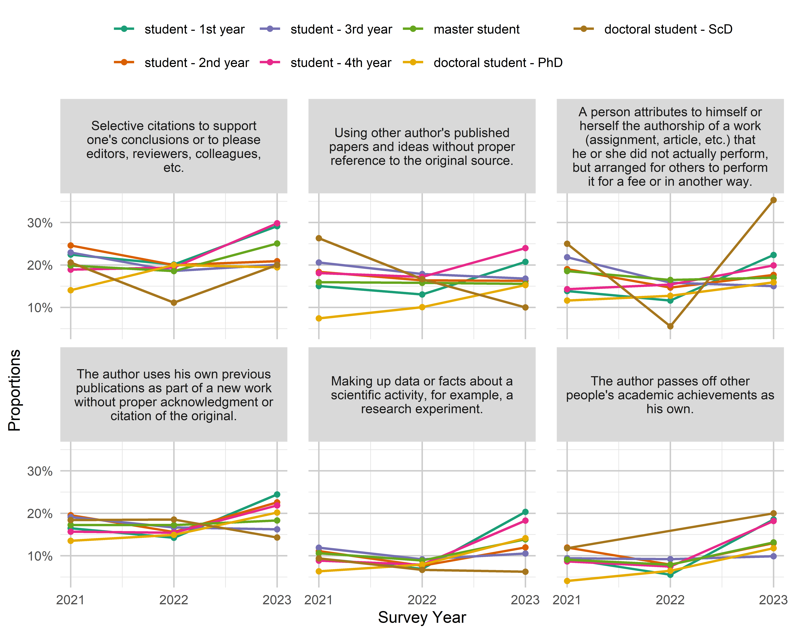
knitr::kable(out$data)| variable | value | student_level | year | n | proportion |
|---|---|---|---|---|---|
| A person attributes to himself or herself the authorship of a work (assignment, article, etc.) that he or she did not actually perform, but arranged for others to perform it for a fee or in another way. | often | student - 1st year | 2021 | 109 | 13.85% |
| A person attributes to himself or herself the authorship of a work (assignment, article, etc.) that he or she did not actually perform, but arranged for others to perform it for a fee or in another way. | often | student - 1st year | 2022 | 108 | 11.61% |
| A person attributes to himself or herself the authorship of a work (assignment, article, etc.) that he or she did not actually perform, but arranged for others to perform it for a fee or in another way. | often | student - 1st year | 2023 | 80 | 22.35% |
| A person attributes to himself or herself the authorship of a work (assignment, article, etc.) that he or she did not actually perform, but arranged for others to perform it for a fee or in another way. | often | student - 2nd year | 2021 | 138 | 19.01% |
| A person attributes to himself or herself the authorship of a work (assignment, article, etc.) that he or she did not actually perform, but arranged for others to perform it for a fee or in another way. | often | student - 2nd year | 2022 | 125 | 14.65% |
| A person attributes to himself or herself the authorship of a work (assignment, article, etc.) that he or she did not actually perform, but arranged for others to perform it for a fee or in another way. | often | student - 2nd year | 2023 | 62 | 17.66% |
| A person attributes to himself or herself the authorship of a work (assignment, article, etc.) that he or she did not actually perform, but arranged for others to perform it for a fee or in another way. | often | student - 3rd year | 2021 | 112 | 21.83% |
| A person attributes to himself or herself the authorship of a work (assignment, article, etc.) that he or she did not actually perform, but arranged for others to perform it for a fee or in another way. | often | student - 3rd year | 2022 | 131 | 15.80% |
| A person attributes to himself or herself the authorship of a work (assignment, article, etc.) that he or she did not actually perform, but arranged for others to perform it for a fee or in another way. | often | student - 3rd year | 2023 | 54 | 15.00% |
| A person attributes to himself or herself the authorship of a work (assignment, article, etc.) that he or she did not actually perform, but arranged for others to perform it for a fee or in another way. | often | student - 4th year | 2021 | 68 | 14.29% |
| A person attributes to himself or herself the authorship of a work (assignment, article, etc.) that he or she did not actually perform, but arranged for others to perform it for a fee or in another way. | often | student - 4th year | 2022 | 99 | 15.37% |
| A person attributes to himself or herself the authorship of a work (assignment, article, etc.) that he or she did not actually perform, but arranged for others to perform it for a fee or in another way. | often | student - 4th year | 2023 | 67 | 19.88% |
| A person attributes to himself or herself the authorship of a work (assignment, article, etc.) that he or she did not actually perform, but arranged for others to perform it for a fee or in another way. | often | master student | 2021 | 88 | 18.57% |
| A person attributes to himself or herself the authorship of a work (assignment, article, etc.) that he or she did not actually perform, but arranged for others to perform it for a fee or in another way. | often | master student | 2022 | 91 | 16.46% |
| A person attributes to himself or herself the authorship of a work (assignment, article, etc.) that he or she did not actually perform, but arranged for others to perform it for a fee or in another way. | often | master student | 2023 | 78 | 16.99% |
| A person attributes to himself or herself the authorship of a work (assignment, article, etc.) that he or she did not actually perform, but arranged for others to perform it for a fee or in another way. | often | doctoral student - PhD | 2021 | 34 | 11.60% |
| A person attributes to himself or herself the authorship of a work (assignment, article, etc.) that he or she did not actually perform, but arranged for others to perform it for a fee or in another way. | often | doctoral student - PhD | 2022 | 20 | 12.74% |
| A person attributes to himself or herself the authorship of a work (assignment, article, etc.) that he or she did not actually perform, but arranged for others to perform it for a fee or in another way. | often | doctoral student - PhD | 2023 | 32 | 15.92% |
| A person attributes to himself or herself the authorship of a work (assignment, article, etc.) that he or she did not actually perform, but arranged for others to perform it for a fee or in another way. | often | doctoral student - ScD | 2021 | 7 | 25.00% |
| A person attributes to himself or herself the authorship of a work (assignment, article, etc.) that he or she did not actually perform, but arranged for others to perform it for a fee or in another way. | often | doctoral student - ScD | 2022 | 1 | 5.56% |
| A person attributes to himself or herself the authorship of a work (assignment, article, etc.) that he or she did not actually perform, but arranged for others to perform it for a fee or in another way. | often | doctoral student - ScD | 2023 | 6 | 35.29% |
| Making up data or facts about a scientific activity, for example, a research experiment. | often | student - 1st year | 2021 | 71 | 9.34% |
| Making up data or facts about a scientific activity, for example, a research experiment. | often | student - 1st year | 2022 | 63 | 6.92% |
| Making up data or facts about a scientific activity, for example, a research experiment. | often | student - 1st year | 2023 | 70 | 20.35% |
| Making up data or facts about a scientific activity, for example, a research experiment. | often | student - 2nd year | 2021 | 81 | 11.10% |
| Making up data or facts about a scientific activity, for example, a research experiment. | often | student - 2nd year | 2022 | 61 | 7.63% |
| Making up data or facts about a scientific activity, for example, a research experiment. | often | student - 2nd year | 2023 | 42 | 11.97% |
| Making up data or facts about a scientific activity, for example, a research experiment. | often | student - 3rd year | 2021 | 58 | 11.91% |
| Making up data or facts about a scientific activity, for example, a research experiment. | often | student - 3rd year | 2022 | 75 | 9.17% |
| Making up data or facts about a scientific activity, for example, a research experiment. | often | student - 3rd year | 2023 | 38 | 10.53% |
| Making up data or facts about a scientific activity, for example, a research experiment. | often | student - 4th year | 2021 | 39 | 8.84% |
| Making up data or facts about a scientific activity, for example, a research experiment. | often | student - 4th year | 2022 | 47 | 7.89% |
| Making up data or facts about a scientific activity, for example, a research experiment. | often | student - 4th year | 2023 | 59 | 18.27% |
| Making up data or facts about a scientific activity, for example, a research experiment. | often | master student | 2021 | 47 | 10.59% |
| Making up data or facts about a scientific activity, for example, a research experiment. | often | master student | 2022 | 49 | 8.88% |
| Making up data or facts about a scientific activity, for example, a research experiment. | often | master student | 2023 | 63 | 13.88% |
| Making up data or facts about a scientific activity, for example, a research experiment. | often | doctoral student - PhD | 2021 | 18 | 6.34% |
| Making up data or facts about a scientific activity, for example, a research experiment. | often | doctoral student - PhD | 2022 | 13 | 7.93% |
| Making up data or facts about a scientific activity, for example, a research experiment. | often | doctoral student - PhD | 2023 | 29 | 14.15% |
| Making up data or facts about a scientific activity, for example, a research experiment. | often | doctoral student - ScD | 2021 | 3 | 9.38% |
| Making up data or facts about a scientific activity, for example, a research experiment. | often | doctoral student - ScD | 2022 | 1 | 6.67% |
| Making up data or facts about a scientific activity, for example, a research experiment. | often | doctoral student - ScD | 2023 | 1 | 6.25% |
| Selective citations to support one’s conclusions or to please editors, reviewers, colleagues, etc. | often | student - 1st year | 2021 | 165 | 22.45% |
| Selective citations to support one’s conclusions or to please editors, reviewers, colleagues, etc. | often | student - 1st year | 2022 | 171 | 20.12% |
| Selective citations to support one’s conclusions or to please editors, reviewers, colleagues, etc. | often | student - 1st year | 2023 | 102 | 29.14% |
| Selective citations to support one’s conclusions or to please editors, reviewers, colleagues, etc. | often | student - 2nd year | 2021 | 167 | 24.59% |
| Selective citations to support one’s conclusions or to please editors, reviewers, colleagues, etc. | often | student - 2nd year | 2022 | 150 | 19.97% |
| Selective citations to support one’s conclusions or to please editors, reviewers, colleagues, etc. | often | student - 2nd year | 2023 | 71 | 20.88% |
| Selective citations to support one’s conclusions or to please editors, reviewers, colleagues, etc. | often | student - 3rd year | 2021 | 109 | 22.95% |
| Selective citations to support one’s conclusions or to please editors, reviewers, colleagues, etc. | often | student - 3rd year | 2022 | 141 | 18.58% |
| Selective citations to support one’s conclusions or to please editors, reviewers, colleagues, etc. | often | student - 3rd year | 2023 | 70 | 20.06% |
| Selective citations to support one’s conclusions or to please editors, reviewers, colleagues, etc. | often | student - 4th year | 2021 | 78 | 18.89% |
| Selective citations to support one’s conclusions or to please editors, reviewers, colleagues, etc. | often | student - 4th year | 2022 | 107 | 19.38% |
| Selective citations to support one’s conclusions or to please editors, reviewers, colleagues, etc. | often | student - 4th year | 2023 | 93 | 29.81% |
| Selective citations to support one’s conclusions or to please editors, reviewers, colleagues, etc. | often | master student | 2021 | 87 | 19.86% |
| Selective citations to support one’s conclusions or to please editors, reviewers, colleagues, etc. | often | master student | 2022 | 95 | 18.55% |
| Selective citations to support one’s conclusions or to please editors, reviewers, colleagues, etc. | often | master student | 2023 | 105 | 25.06% |
| Selective citations to support one’s conclusions or to please editors, reviewers, colleagues, etc. | often | doctoral student - PhD | 2021 | 41 | 14.04% |
| Selective citations to support one’s conclusions or to please editors, reviewers, colleagues, etc. | often | doctoral student - PhD | 2022 | 34 | 20.00% |
| Selective citations to support one’s conclusions or to please editors, reviewers, colleagues, etc. | often | doctoral student - PhD | 2023 | 41 | 19.43% |
| Selective citations to support one’s conclusions or to please editors, reviewers, colleagues, etc. | often | doctoral student - ScD | 2021 | 7 | 20.59% |
| Selective citations to support one’s conclusions or to please editors, reviewers, colleagues, etc. | often | doctoral student - ScD | 2022 | 2 | 11.11% |
| Selective citations to support one’s conclusions or to please editors, reviewers, colleagues, etc. | often | doctoral student - ScD | 2023 | 3 | 20.00% |
| The author passes off other people’s academic achievements as his own. | often | student - 1st year | 2021 | 73 | 9.30% |
| The author passes off other people’s academic achievements as his own. | often | student - 1st year | 2022 | 52 | 5.53% |
| The author passes off other people’s academic achievements as his own. | often | student - 1st year | 2023 | 65 | 18.57% |
| The author passes off other people’s academic achievements as his own. | often | student - 2nd year | 2021 | 86 | 11.93% |
| The author passes off other people’s academic achievements as his own. | often | student - 2nd year | 2022 | 64 | 7.91% |
| The author passes off other people’s academic achievements as his own. | often | student - 2nd year | 2023 | 45 | 12.97% |
| The author passes off other people’s academic achievements as his own. | often | student - 3rd year | 2021 | 49 | 9.40% |
| The author passes off other people’s academic achievements as his own. | often | student - 3rd year | 2022 | 75 | 9.20% |
| The author passes off other people’s academic achievements as his own. | often | student - 3rd year | 2023 | 35 | 9.89% |
| The author passes off other people’s academic achievements as his own. | often | student - 4th year | 2021 | 40 | 8.66% |
| The author passes off other people’s academic achievements as his own. | often | student - 4th year | 2022 | 46 | 7.44% |
| The author passes off other people’s academic achievements as his own. | often | student - 4th year | 2023 | 58 | 18.18% |
| The author passes off other people’s academic achievements as his own. | often | master student | 2021 | 41 | 9.07% |
| The author passes off other people’s academic achievements as his own. | often | master student | 2022 | 44 | 7.89% |
| The author passes off other people’s academic achievements as his own. | often | master student | 2023 | 60 | 13.16% |
| The author passes off other people’s academic achievements as his own. | often | doctoral student - PhD | 2021 | 12 | 4.05% |
| The author passes off other people’s academic achievements as his own. | often | doctoral student - PhD | 2022 | 11 | 6.47% |
| The author passes off other people’s academic achievements as his own. | often | doctoral student - PhD | 2023 | 24 | 11.76% |
| The author passes off other people’s academic achievements as his own. | often | doctoral student - ScD | 2021 | 4 | 11.76% |
| The author passes off other people’s academic achievements as his own. | often | doctoral student - ScD | 2023 | 3 | 20.00% |
| The author uses his own previous publications as part of a new work without proper acknowledgment or citation of the original. | often | student - 1st year | 2021 | 110 | 16.47% |
| The author uses his own previous publications as part of a new work without proper acknowledgment or citation of the original. | often | student - 1st year | 2022 | 104 | 14.23% |
| The author uses his own previous publications as part of a new work without proper acknowledgment or citation of the original. | often | student - 1st year | 2023 | 79 | 24.46% |
| The author uses his own previous publications as part of a new work without proper acknowledgment or citation of the original. | often | student - 2nd year | 2021 | 126 | 19.57% |
| The author uses his own previous publications as part of a new work without proper acknowledgment or citation of the original. | often | student - 2nd year | 2022 | 105 | 15.60% |
| The author uses his own previous publications as part of a new work without proper acknowledgment or citation of the original. | often | student - 2nd year | 2023 | 72 | 22.57% |
| The author uses his own previous publications as part of a new work without proper acknowledgment or citation of the original. | often | student - 3rd year | 2021 | 86 | 19.11% |
| The author uses his own previous publications as part of a new work without proper acknowledgment or citation of the original. | often | student - 3rd year | 2022 | 123 | 16.67% |
| The author uses his own previous publications as part of a new work without proper acknowledgment or citation of the original. | often | student - 3rd year | 2023 | 56 | 16.23% |
| The author uses his own previous publications as part of a new work without proper acknowledgment or citation of the original. | often | student - 4th year | 2021 | 69 | 15.68% |
| The author uses his own previous publications as part of a new work without proper acknowledgment or citation of the original. | often | student - 4th year | 2022 | 87 | 15.43% |
| The author uses his own previous publications as part of a new work without proper acknowledgment or citation of the original. | often | student - 4th year | 2023 | 71 | 21.85% |
| The author uses his own previous publications as part of a new work without proper acknowledgment or citation of the original. | often | master student | 2021 | 78 | 17.26% |
| The author uses his own previous publications as part of a new work without proper acknowledgment or citation of the original. | often | master student | 2022 | 90 | 17.21% |
| The author uses his own previous publications as part of a new work without proper acknowledgment or citation of the original. | often | master student | 2023 | 84 | 18.30% |
| The author uses his own previous publications as part of a new work without proper acknowledgment or citation of the original. | often | doctoral student - PhD | 2021 | 43 | 13.52% |
| The author uses his own previous publications as part of a new work without proper acknowledgment or citation of the original. | often | doctoral student - PhD | 2022 | 27 | 14.92% |
| The author uses his own previous publications as part of a new work without proper acknowledgment or citation of the original. | often | doctoral student - PhD | 2023 | 42 | 20.19% |
| The author uses his own previous publications as part of a new work without proper acknowledgment or citation of the original. | often | doctoral student - ScD | 2021 | 7 | 18.42% |
| The author uses his own previous publications as part of a new work without proper acknowledgment or citation of the original. | often | doctoral student - ScD | 2022 | 5 | 18.52% |
| The author uses his own previous publications as part of a new work without proper acknowledgment or citation of the original. | often | doctoral student - ScD | 2023 | 3 | 14.29% |
| Using other author’s published papers and ideas without proper reference to the original source. | often | student - 1st year | 2021 | 124 | 15.03% |
| Using other author’s published papers and ideas without proper reference to the original source. | often | student - 1st year | 2022 | 131 | 13.06% |
| Using other author’s published papers and ideas without proper reference to the original source. | often | student - 1st year | 2023 | 79 | 20.73% |
| Using other author’s published papers and ideas without proper reference to the original source. | often | student - 2nd year | 2021 | 150 | 18.36% |
| Using other author’s published papers and ideas without proper reference to the original source. | often | student - 2nd year | 2022 | 146 | 16.37% |
| Using other author’s published papers and ideas without proper reference to the original source. | often | student - 2nd year | 2023 | 60 | 16.26% |
| Using other author’s published papers and ideas without proper reference to the original source. | often | student - 3rd year | 2021 | 115 | 20.57% |
| Using other author’s published papers and ideas without proper reference to the original source. | often | student - 3rd year | 2022 | 163 | 17.87% |
| Using other author’s published papers and ideas without proper reference to the original source. | often | student - 3rd year | 2023 | 65 | 16.80% |
| Using other author’s published papers and ideas without proper reference to the original source. | often | student - 4th year | 2021 | 97 | 18.10% |
| Using other author’s published papers and ideas without proper reference to the original source. | often | student - 4th year | 2022 | 118 | 17.18% |
| Using other author’s published papers and ideas without proper reference to the original source. | often | student - 4th year | 2023 | 87 | 23.97% |
| Using other author’s published papers and ideas without proper reference to the original source. | often | master student | 2021 | 82 | 15.95% |
| Using other author’s published papers and ideas without proper reference to the original source. | often | master student | 2022 | 96 | 15.79% |
| Using other author’s published papers and ideas without proper reference to the original source. | often | master student | 2023 | 78 | 15.54% |
| Using other author’s published papers and ideas without proper reference to the original source. | often | doctoral student - PhD | 2021 | 25 | 7.42% |
| Using other author’s published papers and ideas without proper reference to the original source. | often | doctoral student - PhD | 2022 | 19 | 10.05% |
| Using other author’s published papers and ideas without proper reference to the original source. | often | doctoral student - PhD | 2023 | 34 | 15.25% |
| Using other author’s published papers and ideas without proper reference to the original source. | often | doctoral student - ScD | 2021 | 10 | 26.32% |
| Using other author’s published papers and ideas without proper reference to the original source. | often | doctoral student - ScD | 2022 | 4 | 16.67% |
| Using other author’s published papers and ideas without proper reference to the original source. | often | doctoral student - ScD | 2023 | 2 | 10.00% |
Education
out <- plot_time_groups(students, var_overview, edua, group_var = student_level,
legend_reverse = FALSE, ncol = 2)
out$p +
theme(legend.position = "right")knitr::kable(out$data)| variable | value | student_level | year | n | proportion |
|---|---|---|---|---|---|
| Higher education institutions should provide open access to their educational resources (textbooks, manuals, various digital tools, etc.) for everyone. | agree | student - 1st year | 2021 | 963 | 89.17% |
| Higher education institutions should provide open access to their educational resources (textbooks, manuals, various digital tools, etc.) for everyone. | agree | student - 1st year | 2022 | 1210 | 88.13% |
| Higher education institutions should provide open access to their educational resources (textbooks, manuals, various digital tools, etc.) for everyone. | agree | student - 1st year | 2023 | 441 | 89.27% |
| Higher education institutions should provide open access to their educational resources (textbooks, manuals, various digital tools, etc.) for everyone. | agree | student - 2nd year | 2021 | 809 | 88.13% |
| Higher education institutions should provide open access to their educational resources (textbooks, manuals, various digital tools, etc.) for everyone. | agree | student - 2nd year | 2022 | 1012 | 87.85% |
| Higher education institutions should provide open access to their educational resources (textbooks, manuals, various digital tools, etc.) for everyone. | agree | student - 2nd year | 2023 | 406 | 89.62% |
| Higher education institutions should provide open access to their educational resources (textbooks, manuals, various digital tools, etc.) for everyone. | agree | student - 3rd year | 2021 | 590 | 88.19% |
| Higher education institutions should provide open access to their educational resources (textbooks, manuals, various digital tools, etc.) for everyone. | agree | student - 3rd year | 2022 | 968 | 88.56% |
| Higher education institutions should provide open access to their educational resources (textbooks, manuals, various digital tools, etc.) for everyone. | agree | student - 3rd year | 2023 | 377 | 91.50% |
| Higher education institutions should provide open access to their educational resources (textbooks, manuals, various digital tools, etc.) for everyone. | agree | student - 4th year | 2021 | 542 | 90.03% |
| Higher education institutions should provide open access to their educational resources (textbooks, manuals, various digital tools, etc.) for everyone. | agree | student - 4th year | 2022 | 710 | 87.55% |
| Higher education institutions should provide open access to their educational resources (textbooks, manuals, various digital tools, etc.) for everyone. | agree | student - 4th year | 2023 | 374 | 89.90% |
| Higher education institutions should provide open access to their educational resources (textbooks, manuals, various digital tools, etc.) for everyone. | agree | master student | 2021 | 536 | 87.30% |
| Higher education institutions should provide open access to their educational resources (textbooks, manuals, various digital tools, etc.) for everyone. | agree | master student | 2022 | 674 | 86.30% |
| Higher education institutions should provide open access to their educational resources (textbooks, manuals, various digital tools, etc.) for everyone. | agree | master student | 2023 | 582 | 91.08% |
| Higher education institutions should provide open access to their educational resources (textbooks, manuals, various digital tools, etc.) for everyone. | agree | doctoral student - PhD | 2021 | 366 | 83.75% |
| Higher education institutions should provide open access to their educational resources (textbooks, manuals, various digital tools, etc.) for everyone. | agree | doctoral student - PhD | 2022 | 244 | 84.43% |
| Higher education institutions should provide open access to their educational resources (textbooks, manuals, various digital tools, etc.) for everyone. | agree | doctoral student - PhD | 2023 | 286 | 86.93% |
| Higher education institutions should provide open access to their educational resources (textbooks, manuals, various digital tools, etc.) for everyone. | agree | doctoral student - ScD | 2021 | 28 | 66.67% |
| Higher education institutions should provide open access to their educational resources (textbooks, manuals, various digital tools, etc.) for everyone. | agree | doctoral student - ScD | 2022 | 26 | 76.47% |
| Higher education institutions should provide open access to their educational resources (textbooks, manuals, various digital tools, etc.) for everyone. | agree | doctoral student - ScD | 2023 | 16 | 72.73% |
| Students must understand what constitutes inappropriate academic behavior and report it to the appropriate authorities | agree | student - 1st year | 2021 | 1129 | 94.48% |
| Students must understand what constitutes inappropriate academic behavior and report it to the appropriate authorities | agree | student - 1st year | 2022 | 1390 | 92.11% |
| Students must understand what constitutes inappropriate academic behavior and report it to the appropriate authorities | agree | student - 1st year | 2023 | 521 | 92.87% |
| Students must understand what constitutes inappropriate academic behavior and report it to the appropriate authorities | agree | student - 2nd year | 2021 | 945 | 92.56% |
| Students must understand what constitutes inappropriate academic behavior and report it to the appropriate authorities | agree | student - 2nd year | 2022 | 1164 | 93.64% |
| Students must understand what constitutes inappropriate academic behavior and report it to the appropriate authorities | agree | student - 2nd year | 2023 | 453 | 92.64% |
| Students must understand what constitutes inappropriate academic behavior and report it to the appropriate authorities | agree | student - 3rd year | 2021 | 652 | 91.57% |
| Students must understand what constitutes inappropriate academic behavior and report it to the appropriate authorities | agree | student - 3rd year | 2022 | 1107 | 93.81% |
| Students must understand what constitutes inappropriate academic behavior and report it to the appropriate authorities | agree | student - 3rd year | 2023 | 450 | 95.74% |
| Students must understand what constitutes inappropriate academic behavior and report it to the appropriate authorities | agree | student - 4th year | 2021 | 591 | 91.34% |
| Students must understand what constitutes inappropriate academic behavior and report it to the appropriate authorities | agree | student - 4th year | 2022 | 809 | 93.31% |
| Students must understand what constitutes inappropriate academic behavior and report it to the appropriate authorities | agree | student - 4th year | 2023 | 415 | 91.61% |
| Students must understand what constitutes inappropriate academic behavior and report it to the appropriate authorities | agree | master student | 2021 | 620 | 93.09% |
| Students must understand what constitutes inappropriate academic behavior and report it to the appropriate authorities | agree | master student | 2022 | 781 | 93.42% |
| Students must understand what constitutes inappropriate academic behavior and report it to the appropriate authorities | agree | master student | 2023 | 614 | 91.51% |
| Students must understand what constitutes inappropriate academic behavior and report it to the appropriate authorities | agree | doctoral student - PhD | 2021 | 430 | 95.56% |
| Students must understand what constitutes inappropriate academic behavior and report it to the appropriate authorities | agree | doctoral student - PhD | 2022 | 274 | 94.81% |
| Students must understand what constitutes inappropriate academic behavior and report it to the appropriate authorities | agree | doctoral student - PhD | 2023 | 319 | 96.37% |
| Students must understand what constitutes inappropriate academic behavior and report it to the appropriate authorities | agree | doctoral student - ScD | 2021 | 42 | 95.45% |
| Students must understand what constitutes inappropriate academic behavior and report it to the appropriate authorities | agree | doctoral student - ScD | 2022 | 33 | 94.29% |
| Students must understand what constitutes inappropriate academic behavior and report it to the appropriate authorities | agree | doctoral student - ScD | 2023 | 21 | 87.50% |
| Students should openly publish the full texts of their diploma theses | agree | student - 1st year | 2021 | 769 | 69.28% |
| Students should openly publish the full texts of their diploma theses | agree | student - 1st year | 2022 | 874 | 63.75% |
| Students should openly publish the full texts of their diploma theses | agree | student - 1st year | 2023 | 386 | 74.37% |
| Students should openly publish the full texts of their diploma theses | agree | student - 2nd year | 2021 | 681 | 70.21% |
| Students should openly publish the full texts of their diploma theses | agree | student - 2nd year | 2022 | 731 | 64.12% |
| Students should openly publish the full texts of their diploma theses | agree | student - 2nd year | 2023 | 334 | 73.57% |
| Students should openly publish the full texts of their diploma theses | agree | student - 3rd year | 2021 | 451 | 65.65% |
| Students should openly publish the full texts of their diploma theses | agree | student - 3rd year | 2022 | 755 | 66.93% |
| Students should openly publish the full texts of their diploma theses | agree | student - 3rd year | 2023 | 366 | 81.33% |
| Students should openly publish the full texts of their diploma theses | agree | student - 4th year | 2021 | 401 | 65.20% |
| Students should openly publish the full texts of their diploma theses | agree | student - 4th year | 2022 | 522 | 63.97% |
| Students should openly publish the full texts of their diploma theses | agree | student - 4th year | 2023 | 332 | 76.85% |
| Students should openly publish the full texts of their diploma theses | agree | master student | 2021 | 440 | 67.90% |
| Students should openly publish the full texts of their diploma theses | agree | master student | 2022 | 530 | 65.11% |
| Students should openly publish the full texts of their diploma theses | agree | master student | 2023 | 493 | 76.67% |
| Students should openly publish the full texts of their diploma theses | agree | doctoral student - PhD | 2021 | 365 | 82.58% |
| Students should openly publish the full texts of their diploma theses | agree | doctoral student - PhD | 2022 | 229 | 80.07% |
| Students should openly publish the full texts of their diploma theses | agree | doctoral student - PhD | 2023 | 273 | 84.78% |
| Students should openly publish the full texts of their diploma theses | agree | doctoral student - ScD | 2021 | 37 | 88.10% |
| Students should openly publish the full texts of their diploma theses | agree | doctoral student - ScD | 2022 | 29 | 85.29% |
| Students should openly publish the full texts of their diploma theses | agree | doctoral student - ScD | 2023 | 20 | 83.33% |
| The quality of educational services at my higher education institution is high | agree | student - 1st year | 2021 | 1188 | 92.74% |
| The quality of educational services at my higher education institution is high | agree | student - 1st year | 2022 | 1485 | 90.94% |
| The quality of educational services at my higher education institution is high | agree | student - 1st year | 2023 | 521 | 91.56% |
| The quality of educational services at my higher education institution is high | agree | student - 2nd year | 2021 | 952 | 88.15% |
| The quality of educational services at my higher education institution is high | agree | student - 2nd year | 2022 | 1116 | 83.16% |
| The quality of educational services at my higher education institution is high | agree | student - 2nd year | 2023 | 439 | 88.51% |
| The quality of educational services at my higher education institution is high | agree | student - 3rd year | 2021 | 653 | 84.26% |
| The quality of educational services at my higher education institution is high | agree | student - 3rd year | 2022 | 1014 | 78.91% |
| The quality of educational services at my higher education institution is high | agree | student - 3rd year | 2023 | 439 | 91.84% |
| The quality of educational services at my higher education institution is high | agree | student - 4th year | 2021 | 560 | 81.40% |
| The quality of educational services at my higher education institution is high | agree | student - 4th year | 2022 | 750 | 79.45% |
| The quality of educational services at my higher education institution is high | agree | student - 4th year | 2023 | 371 | 81.00% |
| The quality of educational services at my higher education institution is high | agree | master student | 2021 | 586 | 85.30% |
| The quality of educational services at my higher education institution is high | agree | master student | 2022 | 762 | 85.81% |
| The quality of educational services at my higher education institution is high | agree | master student | 2023 | 599 | 87.70% |
| The quality of educational services at my higher education institution is high | agree | doctoral student - PhD | 2021 | 406 | 89.23% |
| The quality of educational services at my higher education institution is high | agree | doctoral student - PhD | 2022 | 266 | 89.86% |
| The quality of educational services at my higher education institution is high | agree | doctoral student - PhD | 2023 | 307 | 90.29% |
| The quality of educational services at my higher education institution is high | agree | doctoral student - ScD | 2021 | 35 | 81.40% |
| The quality of educational services at my higher education institution is high | agree | doctoral student - ScD | 2022 | 32 | 88.89% |
| The quality of educational services at my higher education institution is high | agree | doctoral student - ScD | 2023 | 17 | 77.27% |
out <- plot_time_groups(students, var_overview, eduf, group_var = student_level,
type = "frequency", legend_reverse = FALSE)
out$p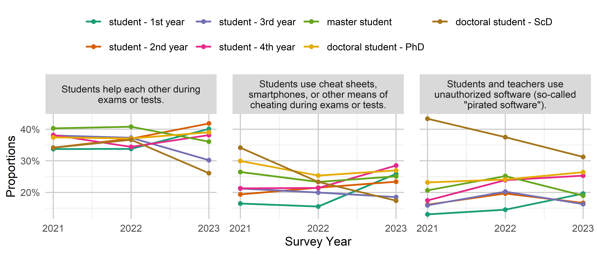
knitr::kable(out$data)| variable | value | student_level | year | n | proportion |
|---|---|---|---|---|---|
| Students and teachers use unauthorized software (so-called “pirated software”). | often | student - 1st year | 2021 | 97 | 13.04% |
| Students and teachers use unauthorized software (so-called “pirated software”). | often | student - 1st year | 2022 | 133 | 14.54% |
| Students and teachers use unauthorized software (so-called “pirated software”). | often | student - 1st year | 2023 | 73 | 19.62% |
| Students and teachers use unauthorized software (so-called “pirated software”). | often | student - 2nd year | 2021 | 114 | 16.12% |
| Students and teachers use unauthorized software (so-called “pirated software”). | often | student - 2nd year | 2022 | 171 | 19.63% |
| Students and teachers use unauthorized software (so-called “pirated software”). | often | student - 2nd year | 2023 | 61 | 16.67% |
| Students and teachers use unauthorized software (so-called “pirated software”). | often | student - 3rd year | 2021 | 80 | 15.90% |
| Students and teachers use unauthorized software (so-called “pirated software”). | often | student - 3rd year | 2022 | 177 | 20.25% |
| Students and teachers use unauthorized software (so-called “pirated software”). | often | student - 3rd year | 2023 | 58 | 16.29% |
| Students and teachers use unauthorized software (so-called “pirated software”). | often | student - 4th year | 2021 | 83 | 17.44% |
| Students and teachers use unauthorized software (so-called “pirated software”). | often | student - 4th year | 2022 | 159 | 23.87% |
| Students and teachers use unauthorized software (so-called “pirated software”). | often | student - 4th year | 2023 | 89 | 25.28% |
| Students and teachers use unauthorized software (so-called “pirated software”). | often | master student | 2021 | 100 | 20.66% |
| Students and teachers use unauthorized software (so-called “pirated software”). | often | master student | 2022 | 152 | 25.17% |
| Students and teachers use unauthorized software (so-called “pirated software”). | often | master student | 2023 | 92 | 18.97% |
| Students and teachers use unauthorized software (so-called “pirated software”). | often | doctoral student - PhD | 2021 | 72 | 23.15% |
| Students and teachers use unauthorized software (so-called “pirated software”). | often | doctoral student - PhD | 2022 | 45 | 24.06% |
| Students and teachers use unauthorized software (so-called “pirated software”). | often | doctoral student - PhD | 2023 | 62 | 26.38% |
| Students and teachers use unauthorized software (so-called “pirated software”). | often | doctoral student - ScD | 2021 | 13 | 43.33% |
| Students and teachers use unauthorized software (so-called “pirated software”). | often | doctoral student - ScD | 2022 | 9 | 37.50% |
| Students and teachers use unauthorized software (so-called “pirated software”). | often | doctoral student - ScD | 2023 | 5 | 31.25% |
| Students help each other during exams or tests. | often | student - 1st year | 2021 | 358 | 33.71% |
| Students help each other during exams or tests. | often | student - 1st year | 2022 | 435 | 33.77% |
| Students help each other during exams or tests. | often | student - 1st year | 2023 | 182 | 40.09% |
| Students help each other during exams or tests. | often | student - 2nd year | 2021 | 317 | 34.16% |
| Students help each other during exams or tests. | often | student - 2nd year | 2022 | 423 | 37.01% |
| Students help each other during exams or tests. | often | student - 2nd year | 2023 | 179 | 41.82% |
| Students help each other during exams or tests. | often | student - 3rd year | 2021 | 254 | 38.02% |
| Students help each other during exams or tests. | often | student - 3rd year | 2022 | 406 | 37.32% |
| Students help each other during exams or tests. | often | student - 3rd year | 2023 | 125 | 30.19% |
| Students help each other during exams or tests. | often | student - 4th year | 2021 | 233 | 38.20% |
| Students help each other during exams or tests. | often | student - 4th year | 2022 | 285 | 34.42% |
| Students help each other during exams or tests. | often | student - 4th year | 2023 | 153 | 38.15% |
| Students help each other during exams or tests. | often | master student | 2021 | 253 | 40.29% |
| Students help each other during exams or tests. | often | master student | 2022 | 317 | 40.80% |
| Students help each other during exams or tests. | often | master student | 2023 | 215 | 36.07% |
| Students help each other during exams or tests. | often | doctoral student - PhD | 2021 | 149 | 37.44% |
| Students help each other during exams or tests. | often | doctoral student - PhD | 2022 | 92 | 37.10% |
| Students help each other during exams or tests. | often | doctoral student - PhD | 2023 | 112 | 39.02% |
| Students help each other during exams or tests. | often | doctoral student - ScD | 2021 | 14 | 34.15% |
| Students help each other during exams or tests. | often | doctoral student - ScD | 2022 | 11 | 36.67% |
| Students help each other during exams or tests. | often | doctoral student - ScD | 2023 | 6 | 26.09% |
| Students use cheat sheets, smartphones, or other means of cheating during exams or tests. | often | student - 1st year | 2021 | 165 | 16.48% |
| Students use cheat sheets, smartphones, or other means of cheating during exams or tests. | often | student - 1st year | 2022 | 187 | 15.53% |
| Students use cheat sheets, smartphones, or other means of cheating during exams or tests. | often | student - 1st year | 2023 | 113 | 25.86% |
| Students use cheat sheets, smartphones, or other means of cheating during exams or tests. | often | student - 2nd year | 2021 | 171 | 19.34% |
| Students use cheat sheets, smartphones, or other means of cheating during exams or tests. | often | student - 2nd year | 2022 | 230 | 21.50% |
| Students use cheat sheets, smartphones, or other means of cheating during exams or tests. | often | student - 2nd year | 2023 | 97 | 23.37% |
| Students use cheat sheets, smartphones, or other means of cheating during exams or tests. | often | student - 3rd year | 2021 | 139 | 21.22% |
| Students use cheat sheets, smartphones, or other means of cheating during exams or tests. | often | student - 3rd year | 2022 | 207 | 19.94% |
| Students use cheat sheets, smartphones, or other means of cheating during exams or tests. | often | student - 3rd year | 2023 | 75 | 18.52% |
| Students use cheat sheets, smartphones, or other means of cheating during exams or tests. | often | student - 4th year | 2021 | 126 | 21.28% |
| Students use cheat sheets, smartphones, or other means of cheating during exams or tests. | often | student - 4th year | 2022 | 170 | 21.41% |
| Students use cheat sheets, smartphones, or other means of cheating during exams or tests. | often | student - 4th year | 2023 | 110 | 28.50% |
| Students use cheat sheets, smartphones, or other means of cheating during exams or tests. | often | master student | 2021 | 157 | 26.48% |
| Students use cheat sheets, smartphones, or other means of cheating during exams or tests. | often | master student | 2022 | 174 | 23.32% |
| Students use cheat sheets, smartphones, or other means of cheating during exams or tests. | often | master student | 2023 | 136 | 25.09% |
| Students use cheat sheets, smartphones, or other means of cheating during exams or tests. | often | doctoral student - PhD | 2021 | 115 | 29.95% |
| Students use cheat sheets, smartphones, or other means of cheating during exams or tests. | often | doctoral student - PhD | 2022 | 60 | 25.32% |
| Students use cheat sheets, smartphones, or other means of cheating during exams or tests. | often | doctoral student - PhD | 2023 | 76 | 26.95% |
| Students use cheat sheets, smartphones, or other means of cheating during exams or tests. | often | doctoral student - ScD | 2021 | 14 | 34.15% |
| Students use cheat sheets, smartphones, or other means of cheating during exams or tests. | often | doctoral student - ScD | 2022 | 7 | 23.33% |
| Students use cheat sheets, smartphones, or other means of cheating during exams or tests. | often | doctoral student - ScD | 2023 | 4 | 17.39% |
Institution/Administration
out <- plot_time_groups(students, var_overview, adm, group_var = student_level,
type = "frequency", legend_reverse = FALSE)
out$pknitr::kable(out$data)| variable | value | student_level | year | n | proportion |
|---|---|---|---|---|---|
| Abuse of official position or authority to encourage academic dishonesty. | often | student - 1st year | 2021 | 60 | 7.28% |
| Abuse of official position or authority to encourage academic dishonesty. | often | student - 1st year | 2022 | 68 | 7.14% |
| Abuse of official position or authority to encourage academic dishonesty. | often | student - 1st year | 2023 | 67 | 17.45% |
| Abuse of official position or authority to encourage academic dishonesty. | often | student - 2nd year | 2021 | 62 | 8.16% |
| Abuse of official position or authority to encourage academic dishonesty. | often | student - 2nd year | 2022 | 89 | 10.16% |
| Abuse of official position or authority to encourage academic dishonesty. | often | student - 2nd year | 2023 | 40 | 10.61% |
| Abuse of official position or authority to encourage academic dishonesty. | often | student - 3rd year | 2021 | 48 | 8.62% |
| Abuse of official position or authority to encourage academic dishonesty. | often | student - 3rd year | 2022 | 76 | 8.50% |
| Abuse of official position or authority to encourage academic dishonesty. | often | student - 3rd year | 2023 | 40 | 10.93% |
| Abuse of official position or authority to encourage academic dishonesty. | often | student - 4th year | 2021 | 50 | 9.90% |
| Abuse of official position or authority to encourage academic dishonesty. | often | student - 4th year | 2022 | 66 | 9.76% |
| Abuse of official position or authority to encourage academic dishonesty. | often | student - 4th year | 2023 | 56 | 15.51% |
| Abuse of official position or authority to encourage academic dishonesty. | often | master student | 2021 | 41 | 7.81% |
| Abuse of official position or authority to encourage academic dishonesty. | often | master student | 2022 | 49 | 7.81% |
| Abuse of official position or authority to encourage academic dishonesty. | often | master student | 2023 | 52 | 10.34% |
| Abuse of official position or authority to encourage academic dishonesty. | often | doctoral student - PhD | 2021 | 19 | 5.74% |
| Abuse of official position or authority to encourage academic dishonesty. | often | doctoral student - PhD | 2022 | 15 | 7.14% |
| Abuse of official position or authority to encourage academic dishonesty. | often | doctoral student - PhD | 2023 | 21 | 9.05% |
| Abuse of official position or authority to encourage academic dishonesty. | often | doctoral student - ScD | 2021 | 5 | 18.52% |
| Abuse of official position or authority to encourage academic dishonesty. | often | doctoral student - ScD | 2022 | 2 | 9.09% |
| Abuse of official position or authority to encourage academic dishonesty. | often | doctoral student - ScD | 2023 | 3 | 17.65% |
| Falsely accusing a student or employee of misconduct or other violations. | often | student - 1st year | 2021 | 65 | 7.60% |
| Falsely accusing a student or employee of misconduct or other violations. | often | student - 1st year | 2022 | 72 | 6.74% |
| Falsely accusing a student or employee of misconduct or other violations. | often | student - 1st year | 2023 | 65 | 16.71% |
| Falsely accusing a student or employee of misconduct or other violations. | often | student - 2nd year | 2021 | 68 | 8.97% |
| Falsely accusing a student or employee of misconduct or other violations. | often | student - 2nd year | 2022 | 94 | 10.05% |
| Falsely accusing a student or employee of misconduct or other violations. | often | student - 2nd year | 2023 | 48 | 12.44% |
| Falsely accusing a student or employee of misconduct or other violations. | often | student - 3rd year | 2021 | 43 | 7.64% |
| Falsely accusing a student or employee of misconduct or other violations. | often | student - 3rd year | 2022 | 78 | 8.41% |
| Falsely accusing a student or employee of misconduct or other violations. | often | student - 3rd year | 2023 | 46 | 12.37% |
| Falsely accusing a student or employee of misconduct or other violations. | often | student - 4th year | 2021 | 45 | 9.36% |
| Falsely accusing a student or employee of misconduct or other violations. | often | student - 4th year | 2022 | 64 | 9.30% |
| Falsely accusing a student or employee of misconduct or other violations. | often | student - 4th year | 2023 | 58 | 16.57% |
| Falsely accusing a student or employee of misconduct or other violations. | often | master student | 2021 | 27 | 5.28% |
| Falsely accusing a student or employee of misconduct or other violations. | often | master student | 2022 | 36 | 5.86% |
| Falsely accusing a student or employee of misconduct or other violations. | often | master student | 2023 | 44 | 8.98% |
| Falsely accusing a student or employee of misconduct or other violations. | often | doctoral student - PhD | 2021 | 11 | 3.37% |
| Falsely accusing a student or employee of misconduct or other violations. | often | doctoral student - PhD | 2022 | 8 | 4.12% |
| Falsely accusing a student or employee of misconduct or other violations. | often | doctoral student - PhD | 2023 | 14 | 6.31% |
| Falsely accusing a student or employee of misconduct or other violations. | often | doctoral student - ScD | 2021 | 3 | 9.68% |
| Falsely accusing a student or employee of misconduct or other violations. | often | doctoral student - ScD | 2023 | 1 | 7.14% |
| Incitement to violate academic integrity. | often | student - 1st year | 2021 | 49 | 5.77% |
| Incitement to violate academic integrity. | often | student - 1st year | 2022 | 57 | 5.40% |
| Incitement to violate academic integrity. | often | student - 1st year | 2023 | 57 | 13.70% |
| Incitement to violate academic integrity. | often | student - 2nd year | 2021 | 43 | 5.49% |
| Incitement to violate academic integrity. | often | student - 2nd year | 2022 | 55 | 5.91% |
| Incitement to violate academic integrity. | often | student - 2nd year | 2023 | 41 | 10.82% |
| Incitement to violate academic integrity. | often | student - 3rd year | 2021 | 42 | 7.06% |
| Incitement to violate academic integrity. | often | student - 3rd year | 2022 | 55 | 6.03% |
| Incitement to violate academic integrity. | often | student - 3rd year | 2023 | 34 | 9.09% |
| Incitement to violate academic integrity. | often | student - 4th year | 2021 | 31 | 5.88% |
| Incitement to violate academic integrity. | often | student - 4th year | 2022 | 51 | 7.34% |
| Incitement to violate academic integrity. | often | student - 4th year | 2023 | 48 | 13.19% |
| Incitement to violate academic integrity. | often | master student | 2021 | 38 | 7.12% |
| Incitement to violate academic integrity. | often | master student | 2022 | 44 | 6.66% |
| Incitement to violate academic integrity. | often | master student | 2023 | 45 | 8.70% |
| Incitement to violate academic integrity. | often | doctoral student - PhD | 2021 | 15 | 4.21% |
| Incitement to violate academic integrity. | often | doctoral student - PhD | 2022 | 12 | 5.69% |
| Incitement to violate academic integrity. | often | doctoral student - PhD | 2023 | 19 | 7.92% |
| Incitement to violate academic integrity. | often | doctoral student - ScD | 2021 | 4 | 13.33% |
| Incitement to violate academic integrity. | often | doctoral student - ScD | 2023 | 1 | 7.14% |
| The administration of the institution tolerates cases of academic dishonesty. | often | student - 1st year | 2021 | 111 | 17.32% |
| The administration of the institution tolerates cases of academic dishonesty. | often | student - 1st year | 2022 | 110 | 13.85% |
| The administration of the institution tolerates cases of academic dishonesty. | often | student - 1st year | 2023 | 85 | 23.94% |
| The administration of the institution tolerates cases of academic dishonesty. | often | student - 2nd year | 2021 | 105 | 17.07% |
| The administration of the institution tolerates cases of academic dishonesty. | often | student - 2nd year | 2022 | 97 | 12.97% |
| The administration of the institution tolerates cases of academic dishonesty. | often | student - 2nd year | 2023 | 56 | 16.52% |
| The administration of the institution tolerates cases of academic dishonesty. | often | student - 3rd year | 2021 | 87 | 18.95% |
| The administration of the institution tolerates cases of academic dishonesty. | often | student - 3rd year | 2022 | 99 | 13.40% |
| The administration of the institution tolerates cases of academic dishonesty. | often | student - 3rd year | 2023 | 68 | 19.60% |
| The administration of the institution tolerates cases of academic dishonesty. | often | student - 4th year | 2021 | 72 | 16.82% |
| The administration of the institution tolerates cases of academic dishonesty. | often | student - 4th year | 2022 | 80 | 14.16% |
| The administration of the institution tolerates cases of academic dishonesty. | often | student - 4th year | 2023 | 68 | 19.88% |
| The administration of the institution tolerates cases of academic dishonesty. | often | master student | 2021 | 66 | 15.35% |
| The administration of the institution tolerates cases of academic dishonesty. | often | master student | 2022 | 71 | 13.00% |
| The administration of the institution tolerates cases of academic dishonesty. | often | master student | 2023 | 70 | 14.55% |
| The administration of the institution tolerates cases of academic dishonesty. | often | doctoral student - PhD | 2021 | 19 | 6.01% |
| The administration of the institution tolerates cases of academic dishonesty. | often | doctoral student - PhD | 2022 | 19 | 9.09% |
| The administration of the institution tolerates cases of academic dishonesty. | often | doctoral student - PhD | 2023 | 22 | 9.91% |
| The administration of the institution tolerates cases of academic dishonesty. | often | doctoral student - ScD | 2021 | 7 | 21.21% |
| The administration of the institution tolerates cases of academic dishonesty. | often | doctoral student - ScD | 2022 | 1 | 4.17% |
| The administration of the institution tolerates cases of academic dishonesty. | often | doctoral student - ScD | 2023 | 3 | 15.79% |
| The university administration accuses and punishes whistleblowers of academic integrity violations. | often | student - 1st year | 2021 | 136 | 26.05% |
| The university administration accuses and punishes whistleblowers of academic integrity violations. | often | student - 1st year | 2022 | 169 | 29.04% |
| The university administration accuses and punishes whistleblowers of academic integrity violations. | often | student - 1st year | 2023 | 102 | 37.92% |
| The university administration accuses and punishes whistleblowers of academic integrity violations. | often | student - 2nd year | 2021 | 137 | 27.73% |
| The university administration accuses and punishes whistleblowers of academic integrity violations. | often | student - 2nd year | 2022 | 146 | 26.21% |
| The university administration accuses and punishes whistleblowers of academic integrity violations. | often | student - 2nd year | 2023 | 82 | 29.08% |
| The university administration accuses and punishes whistleblowers of academic integrity violations. | often | student - 3rd year | 2021 | 74 | 21.26% |
| The university administration accuses and punishes whistleblowers of academic integrity violations. | often | student - 3rd year | 2022 | 122 | 21.00% |
| The university administration accuses and punishes whistleblowers of academic integrity violations. | often | student - 3rd year | 2023 | 85 | 28.15% |
| The university administration accuses and punishes whistleblowers of academic integrity violations. | often | student - 4th year | 2021 | 82 | 24.33% |
| The university administration accuses and punishes whistleblowers of academic integrity violations. | often | student - 4th year | 2022 | 91 | 20.97% |
| The university administration accuses and punishes whistleblowers of academic integrity violations. | often | student - 4th year | 2023 | 77 | 27.11% |
| The university administration accuses and punishes whistleblowers of academic integrity violations. | often | master student | 2021 | 77 | 23.55% |
| The university administration accuses and punishes whistleblowers of academic integrity violations. | often | master student | 2022 | 69 | 19.01% |
| The university administration accuses and punishes whistleblowers of academic integrity violations. | often | master student | 2023 | 77 | 20.75% |
| The university administration accuses and punishes whistleblowers of academic integrity violations. | often | doctoral student - PhD | 2021 | 42 | 18.42% |
| The university administration accuses and punishes whistleblowers of academic integrity violations. | often | doctoral student - PhD | 2022 | 20 | 14.60% |
| The university administration accuses and punishes whistleblowers of academic integrity violations. | often | doctoral student - PhD | 2023 | 34 | 21.79% |
| The university administration accuses and punishes whistleblowers of academic integrity violations. | often | doctoral student - ScD | 2021 | 3 | 15.79% |
| The university administration accuses and punishes whistleblowers of academic integrity violations. | often | doctoral student - ScD | 2022 | 4 | 23.53% |
| The university administration accuses and punishes whistleblowers of academic integrity violations. | often | doctoral student - ScD | 2023 | 2 | 15.38% |
out <- plot_time_groups(students, var_overview, "X15", group_var = student_level,
legend_reverse = FALSE)
out$p +
theme(legend.position = "right")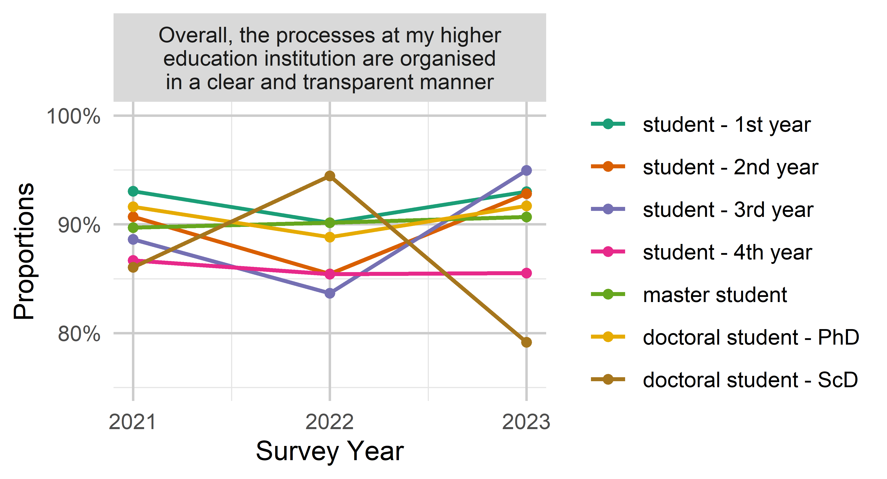
knitr::kable(out$data)| variable | value | student_level | year | n | proportion |
|---|---|---|---|---|---|
| Overall, the processes at my higher education institution are organised in a clear and transparent manner | agree | student - 1st year | 2021 | 1204 | 93.04% |
| Overall, the processes at my higher education institution are organised in a clear and transparent manner | agree | student - 1st year | 2022 | 1481 | 90.14% |
| Overall, the processes at my higher education institution are organised in a clear and transparent manner | agree | student - 1st year | 2023 | 531 | 92.99% |
| Overall, the processes at my higher education institution are organised in a clear and transparent manner | agree | student - 2nd year | 2021 | 984 | 90.69% |
| Overall, the processes at my higher education institution are organised in a clear and transparent manner | agree | student - 2nd year | 2022 | 1144 | 85.44% |
| Overall, the processes at my higher education institution are organised in a clear and transparent manner | agree | student - 2nd year | 2023 | 465 | 92.81% |
| Overall, the processes at my higher education institution are organised in a clear and transparent manner | agree | student - 3rd year | 2021 | 685 | 88.62% |
| Overall, the processes at my higher education institution are organised in a clear and transparent manner | agree | student - 3rd year | 2022 | 1075 | 83.66% |
| Overall, the processes at my higher education institution are organised in a clear and transparent manner | agree | student - 3rd year | 2023 | 452 | 94.96% |
| Overall, the processes at my higher education institution are organised in a clear and transparent manner | agree | student - 4th year | 2021 | 599 | 86.69% |
| Overall, the processes at my higher education institution are organised in a clear and transparent manner | agree | student - 4th year | 2022 | 809 | 85.43% |
| Overall, the processes at my higher education institution are organised in a clear and transparent manner | agree | student - 4th year | 2023 | 396 | 85.53% |
| Overall, the processes at my higher education institution are organised in a clear and transparent manner | agree | master student | 2021 | 619 | 89.71% |
| Overall, the processes at my higher education institution are organised in a clear and transparent manner | agree | master student | 2022 | 805 | 90.15% |
| Overall, the processes at my higher education institution are organised in a clear and transparent manner | agree | master student | 2023 | 623 | 90.68% |
| Overall, the processes at my higher education institution are organised in a clear and transparent manner | agree | doctoral student - PhD | 2021 | 415 | 91.61% |
| Overall, the processes at my higher education institution are organised in a clear and transparent manner | agree | doctoral student - PhD | 2022 | 262 | 88.81% |
| Overall, the processes at my higher education institution are organised in a clear and transparent manner | agree | doctoral student - PhD | 2023 | 309 | 91.69% |
| Overall, the processes at my higher education institution are organised in a clear and transparent manner | agree | doctoral student - ScD | 2021 | 37 | 86.05% |
| Overall, the processes at my higher education institution are organised in a clear and transparent manner | agree | doctoral student - ScD | 2022 | 34 | 94.44% |
| Overall, the processes at my higher education institution are organised in a clear and transparent manner | agree | doctoral student - ScD | 2023 | 19 | 79.17% |
National and Institutional Surveys
The survey was conducted both at a national level and separately within the OPTIMA partner HEIs. To compare developments over time between these surveys, following visualizations are created (again with dichotomized responses).
df <- df %>%
mutate(survey = factor(X63,
levels = c("National", "LPU", "SumDU",
"DonNU", "LutskNTU")))Open Science
out <- plot_time_groups(df, var_overview, os, group_var = survey,
legend_reverse = FALSE)
out$p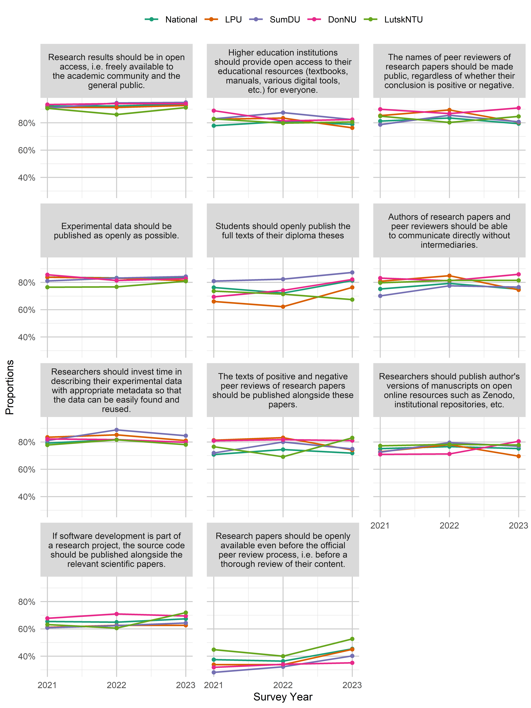
Reporting and Academic Integrity
out <- plot_time_groups(df, var_overview, raia, group_var = survey,
legend_reverse = FALSE)
out$p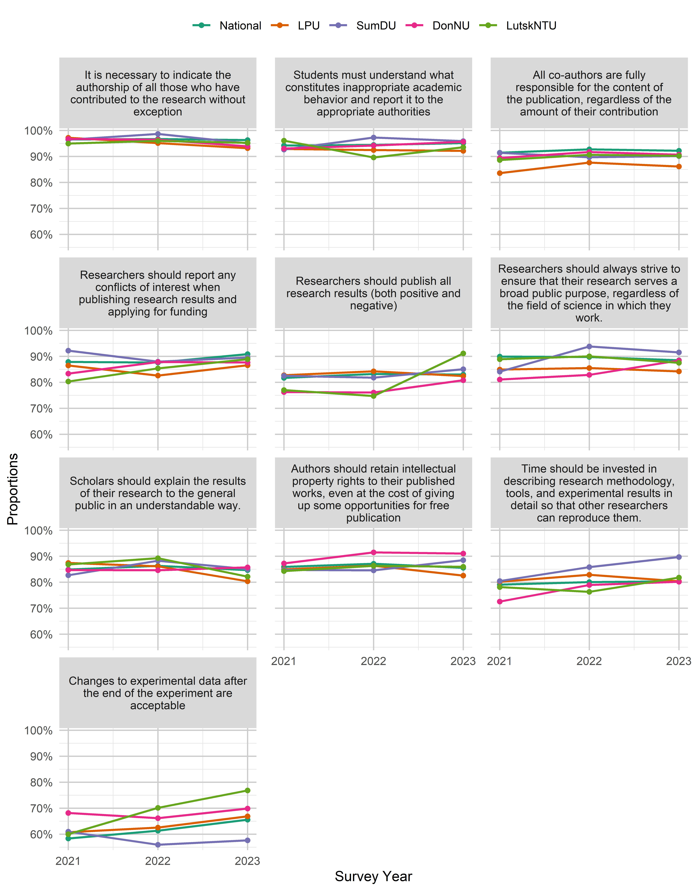
out <- plot_time_groups(df, var_overview, raif, group_var = survey,
type = "frequency", legend_reverse = FALSE)
out$p
Education
out <- plot_time_groups(df, var_overview, edua, group_var = survey, ncol = 2,
legend_reverse = FALSE)
out$pout <- plot_time_groups(df, var_overview, eduf, group_var = survey,
type = "frequency", legend_reverse = FALSE)
out$pInstitution/Administration
out <- plot_time_groups(df, var_overview, adm, group_var = survey,
type = "frequency", legend_reverse = FALSE)
out$pout <- plot_time_groups(df, var_overview, "X15", group_var = survey)
out$p +
theme(legend.position = "right")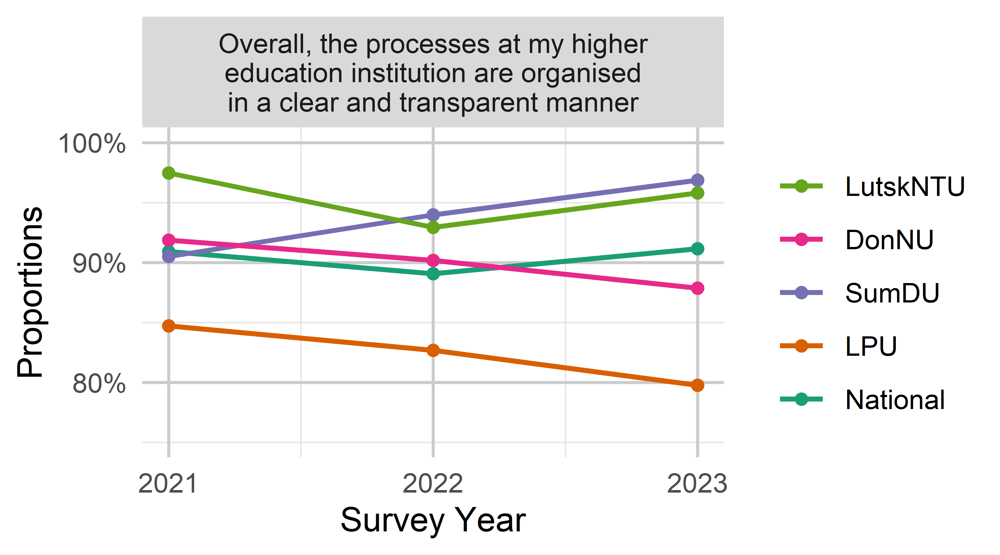
Displacement
In 2022, respondents were additionally asked about whether their HEI had been displaced (in 2014, 2022, or not at all). The following figures show reponses to the items in comparison between displaced and non-displaced HEIs. Responses were again dichotomized to agreement/disagreement and high frequency/low frequency.
agreement_items <- paste0("X", 15:23) %>%
append(paste0("X", 38:52))
frequency_items <- paste0("X", 24:37)
dfd <- df %>%
filter(X64 == "2022")
for (item in agreement_items) {
dfd <- dichotomize_agreement(dfd, item)
}
for (item in frequency_items) {
dfd <- dichotomize_frequency(dfd, item)
}Open Science
plot_groups_overview_agreement(dfd, os, "X62",
"HEI displaced:", "bottom") +
guides(color = guide_legend(nrow = 3))
Reporting and Academic Integrity
plot_groups_overview_agreement(dfd, raia, "X62",
"HEI displaced:", "bottom") +
guides(color = guide_legend(nrow = 3))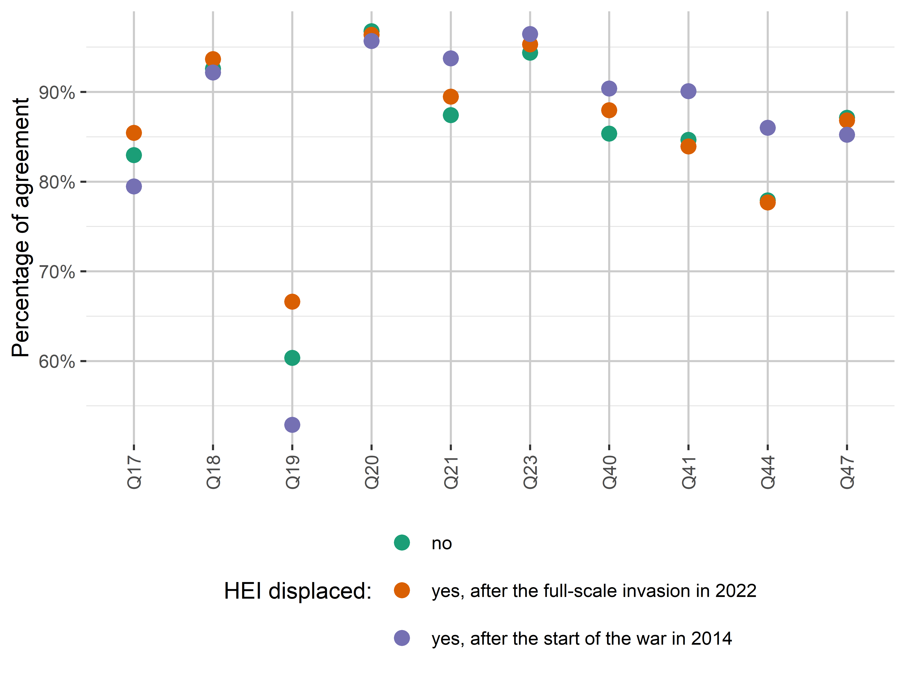
plot_groups_overview_frequency(dfd, raif, "X62",
"HEI displaced:", "right")Education
plot_groups_overview_agreement(dfd, edua, "X62",
"HEI displaced:", "right")plot_groups_overview_frequency(dfd, eduf, "X62",
"HEI displaced:", "right")Institution/Administration
plot_groups_overview_frequency(dfd, adm, "X62",
"HEI displaced:", "right")plot_groups_overview_agreement(dfd, c("X15"), "X62",
"HEI displaced:", "bottom") +
coord_flip() +
theme(axis.text.x = element_text(angle = 0, hjust = 0.5),
axis.title.y = element_blank()) +
guides(color = guide_legend(nrow = 3))